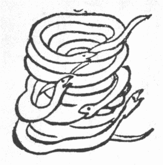
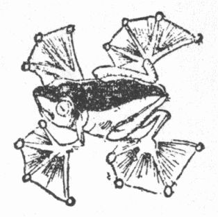
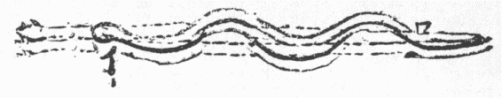
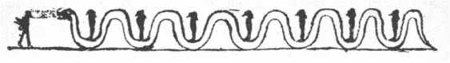
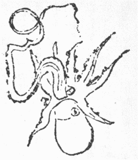

『古今要覧稿』巻五三一に「およそ十二辰に生物を配当せしは王充の『論衡』に初めて見たれども、『
淮南子』に山中
未の日主人と称うるは羊なり、『荘子』に〈いまだかつて牧を為さず、而して

奥に生ず〉といえるを『釈文』に西南隅の
未地といいしは羊を以て
未に配当せしもその由来古し」と論じた。果してその通りなら十二支に十二の動物を配る事戦国時既に支那に存したらしく、『淮南子』に〈巳の日山中に寡人と称せるは、社中の蛇なり〉とある、蛇を以て巳に当てたのも前漢以前から行われた事だろうか。すべて蛇類は好んで水に近づきまたこれに入る。沙漠無水の地に長じた蛇すら能く水を泳ぎ、インドで崇拝さるる
帽蛇は井にも入れば遠く船を追うて海に出る事もあり。されば諸国でいわゆる水怪の多くは水中また水辺に
棲む蛇である（バルフォール『印度事彙』蛇の条、テンネント『
錫蘭博物志』九章、グベルナチス『
動物譚原』二）。わが邦でも水辺に住んで人に怖れらるる諸蛇を水の主というほどの
意でミヅチと呼んだらしくそれに蛟※
［＃「虫＋罔」、U+8744、222-12］
等の漢字を
充てたはこれらも各支那の水怪の
号故だ。現今ミヅシ（
加能）、メドチ（南部）、ミンツチ（蝦夷）など呼ぶは河童なれど、最上川と佐渡の水蛇
能く人を殺すといえば（『善庵随筆』）、支那の蛟同様水の主たる蛇が人に化けて兇行するものをもとミヅチと呼びしが、後世その変形たる河童が専らミヅシの名を
擅にし、御本体の蛇は池の主淵の主で通れどミヅチの称を失うたらしい。かく蛇を
霊怪視した
号なるミヅチを、十二支の
巳に当て略してミと呼んだは同じく十二支の
子をネズミの略ネ、
卯を兎の略ウで呼ぶに等し。また『和名抄』に
蛇和名倍美、
蝮和名波美とあれば蛇類の最も古い総称がミで、宣長の説にツチは尊称だそうだから、ミヅチは蛇の主の義ちょうど支那で
蟒を王蛇と呼ぶ（『爾雅』）と同例だろう。さてグベルナチスが動物伝説のもっとも広く行き渡ったは蛇話だといったごとく、現存の蛇が千六百余種あり。寒帯地とニューゼーランドハワイ等少数の島を除き諸方の原野山林沼沢湖海雑多の場所に棲み大小形色動作習性各同じからず、中には劇毒無類で人畜に大難を
蒙らするもあれば無毒ながら丸呑みと来る奴も多く古来人類の歴史に関係甚だ深い。故にこれに関する民族と伝説は無尽蔵でこれを概要して規律正しく
叙ぶるはとても拙筆では出来ぬ。だが昨年三月号竜の話の末文に大分メートル高く約束をしたから、今更黙ってもおれず、ざっと次のごとく事項を分け列ねた各題目の下に蛇についての諸国の民俗と伝説の
一斑を書き集めよう、竜の話に出た事なるべくまた言わぬ故
双参せて欲しい。
本居宣長いわく、「『古事記』の
遠呂智は『書紀』に大蛇とあり、『和名抄』に蛇和名
倍美一名
久知奈波、『日本紀私記』にいふ
乎呂知とあり、今俗には小さく尋常なるを久知奈波といひ、やや大なるを
幣毘といふ、なほ大なるを
宇波婆美といひ、極めて大なるを
蛇といふなり、遠呂智とは俗に蛇といふばかりなるをぞいひけむ云々」。またいわく、「『和名抄』に蛇和名倍美
※蛇［＃「虫＋元」、U+8696、224-5］加良須倍美※蛇［＃「虫＋冉」、U+86BA、224-6］仁之木倍美とありて
幣美てふ名ぞ
主と聞ゆる、同じ『和名抄』蝮の条に、〈俗あるいは蛇を呼ぶに反鼻と為す、その音
片尾〉といへるは和名倍美とは似たれども別なりと聞ゆ、反鼻は本より正名にあらず一名なるを、その音を取りて和名とすべきにあらず、それも上代この御国になかりし物は漢の一名などをも取りて名づくる例かれこれあれども、蛇などは神代よりある物なれば名もなかるべきにあらず云々、その上幣美といふ名は広くいひ習はしたるやうに聞ゆるをや、しかればこは反鼻の音と自然似たるのみなりけり」。また『和名抄』に
蟒蛇、和名
夜万加々知、『古事記』に
赤加賀智とは
酸漿なりとあれば、山に棲んで眼光強い蛇を
山酸漿といったのであろう。今もヤマカガシちゅう蛇赤くて斑紋あり山野に住み
長六、七尺に及び、剛強にして人に敵抗す。三河の俗説に愛宕または山神の使といい、雷鳴の際天上すともいう（
早川孝太郎氏説）。ありふれた本邦の蛇の中で一番大きいからこれを支那の
巨蟒に
充てたものか。普通に蟒に充てるウワバミは小野蘭山これを『和名抄』の夜万加々智とす。深山に棲み眼大にして光り深紅の舌と二寸ばかりの小さき耳あり、物を食えば
高鼾して
睡る由（『和漢三才図会』）、何かの間違いと見え近頃一向かかる蛇あるを聞かず。ただし昔到る処林野多くも深くもあった世には、尋常のヤマカガシなども今より
迥と老大のもありたるべく、それらを恐怖もて誤察し種々誇大のウワバミ譚をも生じたなるべし、『本草綱目』には
巨蟒一名
鱗蛇と見えて、さきに書いたごとく大蛇様で四足ある大蜥蜴だが、〈蟒は蛇の最も大なるもの、故に王蛇という〉といい（『爾雅』註）、諸書特にその大きさを記して四足ありと言わぬを見れば、アジアの暖地に数種あるピゾン属の諸大蛇、また時にはその他諸蛇の甚だしく成長したのを総括した名らしい。ここに一例としてインド産のピゾン一種人に
馴るる
状を示す（図略す）。これは身長二丈余に達する事あり。英人のいわゆる
岩蛇だ。
『和名抄』に
仁之木倍美と
訓んだ※
［＃「虫＋冉」、U+86BA、225-11］蛇は日本にない。予漢洋諸典を調べるに後インドとマレー諸島産なる大蛇ピゾン・レチクラツスに相違ない。この学名はその脊紋が網眼に似居るに基づき、すこぶる美麗でかの辺の三絃様な楽器の胴に張りおり、『本草』に〈※
［＃「虫＋冉」、U+86BA、225-13］蛇嶺南に生ず、大なるは五、六丈、囲り四、五尺、小なるも三、四丈を下らず〉とあるが、『エンサイクロペジア・ブリタンニカ』十一版に南米熱地産なるアナコンダに次いで諸蛇の最大なるものとあり。アはベーツ説に四十フィートに達するそうだが、ピゾン・レチクラツスは三十フィートまで長ずというから『本草』の
懸値は
恕すべしで、実に東半球最大の蛇だ。さて『本草』に〈身斑紋あり、故に
錦纈のごとし春夏山林中にて鹿を伺いてこれを呑む云々〉とあるは事実で、その肉や
胆の薬効を『本草』に記せると実際旅行中実験した欧人
輩の話とが十分二者を同物とする拙見を
扶け立たしむ。マルコ・ポロ
南詔国の極めて大きな蛇を記して「その
長三丈ほど、太さ大樽のごとく、大きな奴は周り三尺ばかり、頭に近く二前脚あり、後足は鷹また獅子の爪ごとき爪でこれを表わすのみ、頭すこぶる大きく眼は巨なる
麪麭より大きく、口広くして人を
丸嚥みにすべく歯大にして
尖れり、これを見て人畜何ぞ戦慄せざらん、日中は暑ければ地下に
躱れ夜出て食を
覓め、また河や湖泉に行き水を飲む、その身重き故行くごとに尾のために地
凹む事大樽に酒を詰めて
挽きずりしごとし、この蛇往還必ず一途に由る故、猟師その跡に深く
杭を打ち込み、その頂に鋭き
鋼の刃
剃刀様なるを植え、
沙もて覆うて見えざらしむ。かかる杭と刃物を蛇跡へ幾つも設け置いたと知らないかの蛇は、走る力が速ければ刃の当りも強くしてやにわに落命してしまう、烏これを見て鳴くと、猟師が聞き付け走り来ると果して蛇が死んでおり、その胆を取りて高価に
售る。狂犬に咬まれた者少しく
服まば即座に治る、また難産や疥癬に神効あり、その肉また
甘ければ人好んで
購い食う」と言った。『
淮南子』に、越人※
［＃「虫＋冉」、U+86BA、226-14］蛇を得て
上肴となせど中国人は棄て用いるなし。『嶺表録異』に、晋安州で※
［＃「虫＋冉」、U+86BA、226-15］蛇を養い胆を取りて上貢としたと載せ、『五雑俎』に、〈※
［＃「虫＋冉」、U+86BA、226-16］蛇大にして能く鹿を呑む、その胆一粟を口に
※［＃「口＋禽」、U+5659、226-16］めば、
拷椋百数といえどもついに死せず、ただし性大寒にして能く陽道を萎せしめ人をして子なからしむ〉。ランドの『安南風俗迷信記』にこの蛇土名コン・トラン、その脂を塗れば鬚生ずとあれば漢医がこれを大寒性とせるは理あり、『

雅』には〈※
［＃「虫＋冉」、U+86BA、227-3］蛇の脂人骨に
著くればすなわち軟らかなり〉。さてマルコの書をユールが注して、これは

の事だろう、イタリアのマッチオリは
の胆が小
瘡や眼腫に無比の良薬だといったと言うたは甚だ物足らぬ。
両ながら胆が薬用さるるからマルコの大蛇と
と同物だとは、
不埒な論法なる上何種の
にもマルコが記したごとき変な肢がない。予
謂うにマルコはこの事を
人伝に
聞書した故多少の間違いは免れぬ。すなわち頭に近く二前脚ありとは全く誤聞だが、ここに
件の大蛇が※
［＃「虫＋冉」、U+86BA、227-8］蛇すなわちピゾン・レチクラツスたる最も有力な証拠はすべて蛇類は比較的新しき地質紀に蜥蜴類が漸次四脚を失うて化成した物で、精確にこれまでが蜥蜴類これからが蛇と別つ事はならぬ。されば過去世のピゾノモルファ（
擬蟒蛇）など体長きこと蟒蛇に
逼りながら確かに肢を具えていた。さて
※蛇［＃「虫＋冉」、U+86BA、227-11］群の蛇はおよそ六十種あり、熱帯アメリカのボアやアナコンダ、それから眼前予の論題たる
※蛇［＃「虫＋冉」、U+86BA、227-12］、いずれも横綱
著の大蛇がその内にある。知人英学士会員プーランゼーは、
※蛇［＃「虫＋冉」、U+86BA、227-13］群は蛇のもっとも原始な性質を保存すと言った。その訳はこの一群の諸蛇蜥蜴を離るる事極めて遠からず、腰骨と後足の
痕をいささかながら留めおり、すなわち後足の代りに何の役にも立たぬ爪二つ相対して腹下にある。これ正しくマルコが鷹また獅の爪ごとき爪が後足を表わすといえるに合い、南詔国（現時雲南省とシャン国の一部）辺に※
［＃「虫＋冉」、U+86BA、228-1］蛇（ピゾン・レチクラツス）のほか大蛇体でかかる爪もて後足を表わすものなければ、マルコは多少の誤りはあるとも※
［＃「虫＋冉」、U+86BA、228-2］蛇を記載した事疑いを容れず、予往年ロンドンに
之きし時、この事をユールに報ぜんとダグラス男に頼むと、ユールは五年前に死んだと聞いて今まで黙りいたが、折角の聞を
潰してしまうは惜しいから今となっては遼東の豕かも知れぬが筆し置く、この※
［＃「虫＋冉」、U+86BA、228-5］蛇もまた竜に二足のみあるてふ説の一因であろう。
英語でサーペントもスネイクも、蛇とは誰も知り居るが、時にサーペント
およびスネイクと書いた文に
遭う。その時は前者は人に害を加うる力ある蝮また蟒蛇等でその余平凡な蛇が後者だ。ヴァイパーとは上顎骨甚だ短く大毒牙を戴いたまま動かし得る蛇どもで、和漢の蝮もこれに属するからまず蝮と訳するほかなかろう。それからアスプといってエジプトの美女皇クレオパトラが敵に降らばその
凱旋行列に引き歩かさるべきを恥じこの蛇に咬まれて自殺したとある。これはアフリカ諸方に多いハジ蛇なりという。これは既述竜の話中に図に出したインドのコブラ・デ・カペロ（
帽蛇）に
酷似るが喉後の眼鏡様の紋なし。インドで帽蛇を神視しまた蛇
遣いが種々戯弄して
観せるごとく古エジプトで神視され今も見世物に使わる物である。帽蛇は今も梵名ナーガで専ら通りおり、
那伽は漢訳仏典の竜なる由は既述竜の話で繰り返し述べた。また仏教に
摩 羅伽
羅伽てふ一部の下等神ありて天、竜、夜叉、
乾闥婆、阿修羅、
金翅鳥、
緊那羅の最後に
列んで八部を成す。いずれも働きは人より
優だが人ほど前途成道の望みないだけが劣るという。この摩
羅伽は蟒神には
大腹と訳し地竜にして腹行すと
羅什は言った。
竜衆すなわち帽蛇は毎度頭を高く立て歩くに蟒神衆は長く身を引いて行くのでこれは
※蛇［＃「虫＋冉」、U+86BA、229-2］を神とするから出たのだ。
ニューゼーランドハワイアゾールス等諸島や南北
冱寒の地は蛇を産せぬ。ギリシア海に小島多く相近きに産するところの物有無異同あり。例せばシフノス島には毒蛇あり、ケオス島に
蠍、アンチパロス島には蜥蜴のみありて全く蛇なし（ベントの『シクラデス』九〇頁）。『大和本草』に四国に狐なしというが『続沙石集』に四国で狐に取り付かれた話を載す。いずれが間違って居るかしら、『甲子夜話』に
壱岐に
 鼠
鼠なしとある。ロンドンなどは近代全く蛇を生ぜぬという、アイルランドは蛇なきを以て名高く、伝説にこれはパトリク尊者の制禁に因るという。この尊者の生国は定かならず、西暦三七二年頃生まれ十六歳で海賊に捉われアイルランドに売られて人奴となりしが
脱れて大陸に渡り、仏国で修業およそ十四年ついに僧正となり法皇の命を奉じてアイルランドに伝道した。その国のドルイド教の僧輩反抗もっとも烈しかったので尊者やむをえずその
沃野を
詛うてたちまち荒れた沼となし川を詛うて魚を生ぜざらしめ缶子を詛うていくら火を多く
焼いても沸かざらしめ、ついにかの僧輩を詛うて地中に陥り没せしめた。一朝その徒と山中におり寒風堪ゆべからなんだ時、氷雪を集めて息を吹き掛けるとたちまち火となったと詠んだ詩人もある。尊者また太鼓を打ちてアイルランドから毒虫を駆り尽くすに余り力を入れ過ぎて太鼓中途で破れ、その挙また破れかかった時神使下ってこれを繕い目出たく悪虫を除き去り、
爾来永久この国の土に触れば蝮が即死する。この国の石や砂を他邦へ持ち行き毒虫を取り廻らせば虫その輪を脱け出で得ず皆死す。この国の木で
圏を画くもまたしかり。一説に狼と
鼬と狐には
利かぬとあり。また一説にはこれら皆
空で実は尊者の名パトリックをノールス人がパド・レクルと間違え
蟾蜍を（パダ）
逐い去る（レカ）と解した。蟾蜍を欧人は大変な毒物とするところから拡げて、すべての悪性動物を制禁して生ずるなからしめたというたんだそうな（チャンバース『
日次事纂』二、『フォクロール』五巻四号）。アイスランドも蛇なきを以て聞えた。ボスエルの『ジョンソン伝』に、ジョンソンわれ能くデンマーク語でホレボウの『
氷州博物誌』の一章を
暗誦すと誇るので
試せて見ると、「第五十二章蛇の事、全島に蛇なし」とあるばかりだそうな。熊楠ウェブストルの字書を見るとルジクラス（
可笑い）の例としてド・クインシーの語を引く。いわくファン・トロールの書に「アイスランドの蛇―なし」これだけを一章として居ると。前年一英人ファン・トロールの書をデンマークより取り寄せ仔細に
穿鑿せしもかかる章を見ざりしと聞く。ド・クインシー例の変態精神から心得違うてかかる無実を言い出したなるべし。
ベーツの『
亜馬孫河畔の博物学者』アナコンダ蛇が四十二フィートまで長じた事ありと載せ、テッフェ河汀で小児が遊び居る所へアナコンダが潜み来て巻き付いて動き得ざらしめその父児の
啼くを聞きて走り寄り、奮って蛇の頭を執らえ両
齶を

き裂いたと言う。錦絵や
五姓田氏の油絵で見た鷺池平九郎の譚もまるで無根とも想われぬ。アマゾン辺の民
一汎に信ずるはマイダゴア（水の母また精）とて
長数百フィートの怪蛇あり、前後次第して河の諸部に現わると。『
千一夜譚』に海商シンドバッド一友と樹に上り宿すると夜中大蛇来てその友を肩から
嚥みおわり
緊しく樹幹を
纏うて腹中の人の骨砕くる音が聞えたと出で、有名な東洋ゴロ兼
法螺の日下
開山ピントはスマトラで息で人殺す巨蛇に逢ったといい、ドラセルダ、ブラジルのサンパウロを旅行中その
僕大木の幹に腰掛くると動き出したから
熟視ると木でなくて大蛇だったと記した。『
山海経』に
巴蛇象を呑む、一六八三年ヴェネチア版ヴィンセンツオ・マリヤの『
東方行記』四一六頁にインドのマズレ辺に長九丈に達する巨蛇ありて能く象を捲き殺す、その脂は薬用さる、『梁書』に〈倭国獣あり牛のごとし、山鼠と名づく、また大蛇あり、この獣を呑む、蛇皮堅くして
斫るべからず、その上孔あり、
乍く開き乍く閉づ、時にあるいは光あり、これを射て
中れば蛇すなわち死す〉。日本人たるわれわれ何とも見当の付かぬ珍談だが何か鯨の
潮吹の孔などから思い付いた
捏造説でなかろうか。昔ローマとカルタゴと戦争中アフリカのバグダラ河で長百二十フィートの蛇がローマ軍の行進を
遮った。
羅の名将レグルス兵隊をして
大弩等諸機を発して包囲する事
塁砦を攻むるごとくせしめ、ついにこれを平らげその皮と齶をローマの一堂に保存した（プリニの『
博物志』八巻十四章）。北欧の古伝に魔蛇ヨルムンガンド大地を囲める大洋にありて尾を口に
啣え大地を
繞り、動く時は地震起る（マレー『
北方考古篇』）。インドの教説に乳洋中にシェシャ蛇ありて
常紐天その上に眠る。この蛇頭に大地を戴く。『山海経』に〈
崑崙山西北に山あり、周囲三万里、巨蛇これを繞り三周するを得、蛇ために長九万里、蛇この上におり、
滄海に飲食す〉。十六年ほど前アンドリウスはエジプトで長六十フィートなる蛇の化石を発見した。
蛇の特質は述べ尽くされぬほどあるだろうから、思い出すままに少々書いて見る。豊後の三浦魯一氏の説に（『郷土研究』二巻三号、以下この雑誌を単に『郷』と書き、巻数と頁数は数字のみ挙ぐる）蛇を川に流しこっちに首を向ければ戻って来る。向う岸の方に向ければ帰って来ぬとあるは何でもない事のようだが、蟾蜍が首を向けたと反対の方へ行くと全く
異って面白い。『古史通』に「『神代巻抄』に人を
呪詛する符などをば
後様に棄つる時は我身に負わぬという、
反鼻をも後様に棄つれば再び帰り来らずというと見えたり」、紀州西牟婁郡では今もこうして蛇を捨てる。本邦でも異邦でも蛇が往来
稀ならぬ官道に夏日臥して動かぬ事がある。これは人馬や携帯品に附いて来る虫や様々の遺棄物を
餌うためでもあろう。ルマニヤの俗伝にいわく昔犬頭痛甚だしくほとんど狂せんとし、諸所駈け廻るうち蛇に
邂逅せ療法を尋ねた。蛇いわく僕も頭痛持ちだが蛇の頭痛療法を知ると同時に犬の頭痛療法を心得おらぬから詰まらない。犬いわく
汝の事はどうでもよい、とにかく
予の頭痛を治す法を教えてくれ
後生だ。蛇いわくそれそこにある草を食べなされ、直ちに治ると、犬すなわち往きてその草を食い頭痛たちまち快くなった。人さえ背恩の輩多き世に犬が恩など知ろうはずなく、頭痛が治った意趣返しをやらにゃならぬと
怪しからぬ考えを起し、蛇を尋ねておかげで己の病は治ったが
頃日忘れいた蛇の頭痛療法を
憶い出したと語り、蛇に懇請されてそれなら教えよう、造作もない事だ、汝が頭痛したら官道に往って全く総身を伸ばして
暫く居れば
輙く治ると告げた。蛇教えのままに身を伸ばして官道に横たわり居ると、棒持った人が来て蛇を見付けると同時に烈しくその頭を打ったので、蛇の頭痛はまるで
何処へ飛んでしまった。蛇は犬の奸計とは気付かず爾来頭が痛むごとに律義に犬の
訓え通り官道へ横たわり行く。つまり頭が打ち砕かれたら死んでしまうから療治も
入らず。幸い身を以て
遁れ得たら
太く驚いて何処かへ頭痛が散ってしまうのである（一九一五年版ガスター著『
羅馬尼禽獣譚』）。コラン・ド・プランシーの『
妖怪字彙』四版四一四頁には、欧州に蛇が
蛻ぐごとに若くなり決して死なぬと信ずる人あるという。英領ギヤナのアラワク人の談に、往時上帝地に
降って人を視察した、しかるに人ことごとく悪くて上帝を殺そうとし、上帝怒って不死性質を人より奪い蛇蜥蜴甲虫などに与えてよりこれらいずれも皮脱で若返ると。フレザーの『
不死の信念』（一九一三年版）一に、こんな例を夥しく挙げて昔
彼輩と人と死なざるよう競争の末人敗れて必ず死ぬと定ったと信ずるが普通だと論じた。この類の信念から生じたものか、本邦で蛇の
脱皮で湯を使えば
膚光沢を生ずと信じ、『和漢三才図会』に雨に濡れざる
蛇脱の黒焼を油で
煉って
禿頭に塗らば毛髪を生ずといい、オエンの『
老兎巫蠱篇』に蛇卵や蛇脂が老女を若返らすと載せ、『絵本太閤記』に淀君妖僧日瞬をして秘法を修せしめ、己が内股の肉を大蛇の肉と入れ替えた。それより艶容
匹なく姿色衰えず淫心しきりに生じて制すべからず。ために内寵多しとあるは作事ながら多少の根柢はあるなるべし。本邦で蛇は一通りの殺しようで死に切らぬ故執念深いという。これに反し蝮は強き一打ちで死ぬ。『和漢三才図会』に蝮甚だ
勇悍なり、農夫これを見付けて殺そうにも刀杖の持ち合せない時、これに向って汝は卑怯者だ逃げ去る事はならぬぞといい置き、家に還って
鋤鍬を持ち行かば蝮ちゃんと元のままに待って居る。竿でその頭を
※［＃「てへん＋孑」、U+21945、234-14］るにかつて逃げ去らず。
徐々と身を縮め肥えてわずかに五、六寸となって跳び懸かるその頭を
拗げば死すとある。蝮は蛇ほど速く逃げ去らぬもの故、人に
詞懸けられてその人が刀杖を取りに往く間待って居るなど言い出したのだ。
英国や米国南部やジャマイカでは、蛇をいかほど打ち
拗ぐとも尾依然動きて生命あるを示し、日没して後やっと死ぬと信ず（『ノーツ・エンド・キーリス』十輯一巻二五四頁）。英のリンコルンシャーで伝うるは、蛇切れたら切片が種々動き廻り切り口と切り口と逢わば継ぎ合うて蘇る。それ故蛇を殺すにはなるべく多くの細片に切り

めばことごとく継ぎ合うに時が掛かる、その内に日が
没るから死んでしまうそうじゃ。
日向の俗信に、
新死の蛇の死骸に馬糞と小便を掛けると蘇ると（『郷』四の五五五）。右リンコルンシャーの伝は欧州支那ビルマ米国に産する
蛇状蜥蜴を蛇と心得て言い出したのだ。外貌甚だ蛇に似た物だが実は蜥蜴が退化して前脚を失い後脚わずかに二小刺となりいる。すべてこんな蜥蜴が退化してほとんどまたは全く四脚を失うたものと真の蛇を見分けるには、無脚蜥蜴の
瞼は動くが蛇のは（少数の例外を除いて）動かぬ。蛇の下齶の
前にちょっと欠けた所があって口を閉じながらそこから舌を出し得るが蜥蜴の口は開かねば舌を出し得ぬ。また蛇の腹は横に広くて脇から脇へ続いて大きな鱗一行（稀に二行）を被るに蜥蜴の腹は鱗七、八行またそれより少なくとも一行では済まぬ。それから蜥蜴の腹を
逆さに撫でるに滑らかなれど、蛇の腹を逆撫ですると鱗の下端が指に
鈎る。また無脚蜥蜴は蛇の速やかに走るに似ず行歩甚だ鈍い。さて
蛇状蜥蜴はすべて三種あるが皆尾が体より遥かに長くその区分がちょっとむつかしい。その尾に
夥しく節あり、驚く時非常な力で尾肉を固く縮める故ちょっと
触れば二、三片に
断れながら
跳り廻る。これは蜥蜴の尾にも能く見るところで切った尾が跳り行くのに敵が見とれ居る間に蜥蜴は逃げ去るべき仕組みだ。こんな事から米国でも欧州でも
蛇状蜥蜴を
硝子蛇と呼ぶ。鱗が
硝子様に光り長い尾が硝子のごとく
脆く折れるからだ。したがって支那にも『淮南子』に神蛇自らその尾を断ち自ら
相続ぐ、その怒りに触ればすなわち自ら断つ事刀もて
截つごとし、怒り定まれば
相就いて
故のごとし。『潜確類書』に〈脆蛇一名片蛇、雲南の大侯禦夷州に
出づ、長二尺ばかり、人に遇わばすなわち自ら断ちて三、四となる人去ればすなわちまた
続ぐ、これを乾して
悪疽を治す云々〉。米国でも硝子蛇ちょっと触れば数片に
折け散りまた合して全身となるといい、それより転じて真の蛇断れた時
艾のような草で自ら
続ぎ合すという（オエン『
老兎および巫蠱篇』）。
プリニウス言う、ハジ（アフリカの帽蛇）の眼は頭の前になくて
顳
にあれば前を見る事ならず、視覚より足音を聴いて動作する事多しと。テンネントの『
錫蘭博物志』にいわく、セイロンで蛇に咬まるるはほとんど皆夜なり。昼は人が蛇を見て注意すれど闇中不意に踏まば蛇驚いて正当防禦で咬むのだ。故に土人闇夜外出するに必ず
錫杖を突き蛇その音を聴いて逃げ去ると。しかるに蝮は逃ぐる事遅いから英国労働者などこれを聾と見、その脊の斑紋実は文字で歌を書いて居るという。その歌を南方先生が字余り
都々逸に訳すると「わが眼ほど耳がきくなら逃げ支度して人に
捉られはせぬものを」だ。鶯も蛙も同じ歌仲間というが敷島の
大倭での事、西洋では蝮が唄を作るのじゃ。蛇は多く卵で子を生むが蝮や海蛇や多くの水蛇や
響尾蛇は胎生だ。『和漢三才図会』に蝮の子生まるる時尾まず出で竹木を巻き母と子と引き合うごとく、出生後直ぐに這い行く、およそ六、七子ありという。ホワイトの『セルボルン博物志』には、蝮の子は生まるると直ぐ歯もないくせに人を咬まんとす、雛鶏
趾なきに蹴り、
羔と
犢は角なきに頭もて物を推し退くと記した。いわゆる蛇は寸にしてその気ありだ。
蟾蜍など蛙類に進退
究まる時頭を以て敵を押し退けんとする性あり。コープ博士だったかかくてこの輩の頭に追々角が
生える筈といったと覚える。支那の書に角ある蟾蜍の話あるは虚構とするも、予輩しばしば
睹た南米産の大蛙ケラトリフス・コルナタは両眼の上に角二つある。それ
羔犢角なきに
衝く真似し歯もなき蝮子が咬まんとするは角あり牙ある親の性を伝えたに相違ないが、
件のコープの説に拠ると、いずれも最初に衝こう咬もうという一念から牛羊の始祖は角、蝮の始祖は牙を生じたのだ。ブラウンの『
俗説弁惑』三巻十六章にヘロドテ等昔の学者は、蝮子母の腹を破って生まる。これ交会の後雌蝮その雄を噛み殺す故、その子父の復仇に母の腹を破るのだと信じた。かく蝮は父殺しを
悪むもの故ローマ人は父殺した人を蝮とともに
嚢に容れて水に投げ込み誅したと
出づ。ただし天主教のテクラ尊者は蛇坑に投げられ、英国中古の物語に回主がサー・ベヴィス・オブ・ハムプタウンを竜の牢に入れたなどいう事あれば、ローマ人のほかに蛇で人を刑した例は西洋に少なからぬじゃ。東洋では『
通鑑』に後漢の高祖が毒蛇を集めた水中に罪人を投じ水獄と名づけた。また仏経地獄の呵責を述ぶる内に罪人蛇に咬まるる例多きは、インドにも実際蛇刑があったに基づくであろう。わが邦にそんな実例のあった由を聞かねど、加賀騒動の講談に大槻蔵人一味の老女竹尾が彼輩姦謀
露われた時蛇責めに逢うたとあるは多分虚譚であろう。大水の時蛇多く屋根に集まり、わずかに取り
縋りいる婦女や児輩が驚き怖れて手を放ち溺死する事しばしばあったと聞く。
毒蛇が
窘められた時思い切って自分の身を咬んで絶命するという事しばしば聞いたが、毒蛇を酒精に浸すと
困んで七転八倒し、怒って自分の体に咬み付いたまま死ぬ事あり、また火を以て
蠍を取り囲むにその毒尾の
尖を曲げて脊を衝いて死する事もあるが、これらは狂人が自身を咬むと等しく、決して企ててする自殺でなくまた毒分が自身を害するでもないから、ただ自殺と見えるばかりだ。朝鮮にある沖縄人から前日報ぜられたは、以前ハブ蛇多き山を焼くとかように自身を咬んだまま死んだハブばかり
間見当った由。仏が寺門屋下に
鴿蛇猪を画いて
貪瞋痴を表せよと教え（『根本説一切有部毘奈耶』三四）、その他蛇を
瞋恚の標識とせる事多きは、右の擬自殺の体を見たるがその主なる一因だろう、古インド人も蛇自殺する事ありと信じたと見える。たとえば『
弥沙塞五分律』に
舎利弗風病に
罹り
呵梨勒果一を牀脚辺に
著けたまま忘れ置いて出た。
瞿伽離見付けて諸比丘に向い、世尊
毎も舎利弗は欲少なく足るを知ると讃むるが我らの手に入らぬこの珍物を蓄うるは世尊の言と違うと言った。舎利弗聞いてその
果を棄てた。諸比丘それは大徳病気の療治に蓄えたのだから棄つるなかれと言うと、舎利弗われこの少しの物を持ったばかりに梵行人をして我を怪しましめたは遺憾なり、捨てた物は
復び取れぬと答えた。仏
言わく、舎利弗は一度思い立ったら五分でも後へ
退かぬ気質だ。過去世にもまたその通りだった。過去世一黒蛇あり、一犢子を
螫した後穴に退いた。呪師羊の角もて呪したがなかなか出で来ぬから、更に犢子の前に火を燃して呪するとその火蜂と
化って蛇穴に入った黒蛇蜂に螫され痛みに堪えず、穴を出でしを羊角で
抄うて呪師の前に置いた。呪師蛇に向い、汝かの犢を
舐って毒を取り去るか、それがいやならこの火に投身せよと言うと蛇答えて、彼この毒を吐いた上は
還これを収めず、たとい死ぬともこの
意を翻さぬと言いおわって毒を収めず自ら火に投じて死んだが舎利弗に
転生った。死苦に臨むもなお一旦吐いた毒を
収れず、いわんや今更に棄つるところの薬を収めんやと。『
十誦律毘尼序』にこの譚の異伝あり。大要を挙げんに、
舎婆提の一居士諸僧を
請ぜしに舎利弗上座たり。仏の法として比丘の食後今日は飲食美味に飽満たりや否やと問う定めだったので、僧ども帰りて後仏が一子
羅喉羅その時
沙弥（小僧）たりしにかく問うに得た者は足り得ざる者は不足だったと答えた。仔細を尋ぬるに上座中座の諸僧は美食に飽きたが、下座と沙弥とは古飯と
胡麻滓を菜に合せて煮た
麁食のみくれたので
痩せ弱ったという。仏舎利弗は
怪しからぬ不浄食をしたというを聞きて、舎利弗食べた物を吐き出し、一生馳走に招かれず布施を受けずと決心し常に乞食した。諸居士
何卒舎利弗が馳走を受けくれるよう仏から勧めて欲しいと言うと、仏
言わく舎利弗の性もし受くれば必ず受けもし棄つれば必ず棄つ、過去世もまたしかりとて毒蛇だった時火で自殺した一件を説き種々の因縁を以て舎利弗を
呵り、以後馳走に招かれたら上座の僧まず食いに掛からず、一同へあまねく行き届いたか見届けた後食うべしと定めたそうじゃ。
而して
件の毒蛇を呪する法を
舎伽羅呪だと書き居る。そんなもの今もあるにや、一九一四年ボンベイ版エントホヴェンの『グジャラット
民俗記』一四二頁に或る術士は
符
を以て人咬みし蛇を招致し、命じて
創口から毒を吸い出さしめて癒す。蛇咬を療ずる呪を心得た術士は蛇と同色の物を食わず
産蓐と経行中の女人に触れると呪が利かなくなる。しかる時は身を
浄め洗浴し、乳香の烟を吸いつつ呪を
誦して呪の力を復すと見ゆ。
インドは毒蛇繁盛の国だけに、その呪法が極めて多い。『弥沙塞五分律』に、一比丘浴室の火を燃さんとて薪を破る時、木の孔より蛇出で、脚を
螫して比丘を殺した。仏
言わくかの比丘八種の蛇名を知らず、慈心もて蛇に向わず、また呪を説かずして蛇に殺されたとて、八種の蛇名を挙げたるを見るに、竜王の名多し。仏経の竜は某々の蛇にほかならぬからだ。その呪言は、〈我諸竜王を
慈しむ、天上および世間、わが慈心を以て、諸
恚毒を滅し得、我
智慧を以て取り、これを用いこの毒を殺す、味毒無味毒、滅され地に入りて去る〉、仏曰く、この呪もて自ら護る者は、毒蛇に傷殺されずと。味毒無味毒とは、蛇の牙から出る毒液に、味あると味なきとあるを、古くインド人が試み知ったと見ゆ。
一九〇六年版、ドラコット女史の『シムラ
村話』二一八頁にいわく、インドの小邦ラゴグールの王は、
帽蛇を始め諸蛇の咬んだのを治す力を代々受け伝う。毒蛇に咬まれた人、糸一条を七所結び頸に掛け、ジェット・シン、ジェット・シンと唱え続けながら、王宮に
趨く途中、結び目を六つまで解く、宮に入って王の前で、七つ目の結びを解く、時に王水をその
創に
灌ぎ、また両手に懸け、一梵士来りて祈りくれると、平治して村へ還ると。トダ人蛇咬を療するに、女の髪を
捻り合せて、創の近処三所括り呪言を称う（リヴァルス著『トダ人篇』）。いかなる理由ありてか、紀州でウグちゅう魚に刺されたら、一日ばかり劇しく痛み、死ぬ方が
優じゃなど叫ぶ時、女の陰毛三本で創口を
衝かば治るという。『郷土研究』二巻三六八頁にも、門司でオコゼに刺された処へ、女陰の毛三筋当て置けば、神効ありと
出づ。ある人いわく、ウグもオコゼも人を刺し、女は

。その事大いに異なれど国言相通ず。陰陽和合して世間治安する訳だから、魚に一たび刺された代りに
仇を、徳で征服する意で、女人の名代にその毛を用いるのだと。これは大分受け取りがたい。しかし女の髪といい、三という数がインドのトダ人の呪術にもあるが面白い。
『古事記』にも、
須佐之男命の女
須勢理毘売が、
大国主命に蛇の
領巾を授けて、蛇室中の蛇を制せしめたとあれば、上古本邦で女がかかる術を心得いたらしい。インドの術士は能く呪して、手で触れずに蛇を引き出し払い去る（一九一五年版エントホヴェンの『コンカン民俗記』七七頁）。アツボットの『マセドニアン
民俗』に、かの地で蛇来るを留むる呪あり。「諸害物の駆除者モセスは、柱と棒の上に投鎗を加えて、十字架に
像どり、その上に地を這う蛇を結い付けて、邪悪に全勝せり、モセスかくて威光を揚げたれば、吾輩は吾輩の神たるキリストに向いて唄うべし」という事だ。欧州で中古
禁厭を行う者を火刑にしたが、アダム、エヴァの時代より、
詛われた蛇のみ
厭う者を
咎めなんだ。蛇を見付けた処から、少しも身動きせざらしむる呪言は「汝を造れる上帝を
援いてわれ汝に、汝の機嫌が向おうが向くまいが、今汝が居る処に永く留まれと命じ、兼ねて上帝が汝を詛いしところのものを以て汝を詛う」というのだ（チャムバースの『ブック・オブ・デイス』一巻一二九頁）。『嬉遊笑覧』に、『萩原随筆』に蛇の怖るる歌とて「あくまたち我たつみちに
横へば、やまなしひめにありと伝へん」というを載せたり。こは北沢村の北見伊右衛門が伝えの歌なるべし。その歌は、「この路に錦
斑らの虫あらば、山立姫に
告ひて取らせん」。『四神地名録』多摩郡喜多見村条下に、この村に
蛇除伊右衛門とて、毒蛇に食われし時に呪いをする百姓あり、この辺土人のいえるには、蛇多き草中に入るには、伊右衛門／＼と唱えて入らば、毒蛇に食われずという、守りも出す。蛇多き時は、三里も五里も、守りを受けに来るとの事なり、奇というべしといえり。さてかの歌は、その守りなるべし。あくまたちは赤斑なるべく、山なし姫は、山立ひめなるべし。野猪をいうとなん、野猪は蛇を好んで食う、殊に
蝮を好む由なり。予在米の頃、ペンシルヴァニア州の
何処かに、蛇多きを平らげんとて、欧州より野猪を多く輸入し、放ちし事ありし。右の歌、蛇を悪魔とせしは、
耶蘇教説に同じ。
梨と言い掛けた山梨姫とは、野猪が山梨を
嗜むにや、識者の教えを
竢つ。
三河国
池鯉鮒大明神の守符、蛇の害を避く。その氏子の住所は蛇なく、他の神の氏子の住所は、わずかに
径を隔つも蛇棲む。たといその境
雑るもかくのごとし（『甲子夜話』続篇八〇）。和歌山近在、矢宮より出す守符は妙に蝮に
利く。蝮を見付けてこれを
抛げ付くると、麻酔せしようで動く能わずというが、予
尋常の紙を畳んで抛げ付けても、暫くは動かなんだ。世に蝮指というは、指を緊張して伸ばし、先端の第一関節のみ折れ曲がりて、蛇の鎌頸状を成すので、五指ことごとくそうなるを
苦手といい、蛇その人を見れば怖れて動かず、自在に捕わるそうだ（『郷土研究』四の五〇二）。予の現住地の俗信に、蝮指の爪は横に広く、
癪を抑うるに効あり、その人手が利くという。拙妻は左手のみ蝮指だから、亭主
勝りの左
利じゃなかろうかと案じたが、実は一滴も
戴けませんから安心しやした。それからまた、苦手の人蟹を掴み、少時経つとその甲と手足と分れてしまうという、『仏説穣麌梨童女経』は、蛇を死活せしむる真言を説いた物だ。
蛇で占う事、『淵鑑類函』四三九に、『詩経類考』を引いて、江西の人、菜花蛇てふ緑色の蛇を捕え、その
蟠る形を種々の
卦と名づけ、禍福を判断し俚俗これを信ずと
出づ。『酉陽雑俎』に、蛇
交むを見る人は三年内に死す。ハツリットの『
諸信および民俗』二に、古ローマ人は蛇の動作を見て
卜うた。ロッス説に、水蛇と陸上の蛇の闘いは、人民の不幸を予示すと。アツボットいわく、マセドニア人、
首途に蛇を見れば不吉として引き還すと。ラームグハリット言う、ニルカンス鳥は、女神シタージの使物として、インドに尊ばる帽蛇、蛙を
啣え、頭にこの鳥を載せて川を渡るを見る人は、翌年必ず国王となると。南方先生裸で寝て居る所へ、禁酒家の娘が百万円持参で、押し付け
娵入りに推し懸くるところを見た人はという事ほど、さようにあり得べからざる事である。
ハツリット説に、一八六九年アルゼリアのコンスタンチナ市裁判所で、夫が妻の貞操を疑うて、その鼻と上唇を
截った裁判あった時、妻の母いわく、この男は
悋気甚だしいから、妾それを止めんとて、高名な道士に蛇の頭を麻の葉に
裹んでもらい、婿の頭巾の
襞の中へ入れるつもりでしたと言い、傍聴人に向って、何とこの法が一番能く利くでありませぬかと問うと、たちまちアラブ人数名頭巾を脱いで、銘々そうともそうとも、吾輩も悋気が
豪いからこの通りと言って、
件の
禁厭品を取り出し示したが、陪席の土人官員一名、また判官の問いをも
俟たず、僕も妻について焼かぬ間もなしだから、この通り蛇頭を戴きおります、蛇頭は男子を強力、女人を貞実ならしむる物ですと述べたそうだ。ブラックの『
俚薬方篇』五九頁に、英国サセックスの俗頸
腫れた時、蛇を頸の上に
挽きずり、
罎に封じ固く栓して埋めると、蛇腐るに随って腫れ減ずと見ゆ。これは英国で、
蝸牛や牛肉や
林檎に
疣を移し、わが
邦でも、鳥居や
蚊子木葉に疣を伝え去るごとく、頸の腫れを蛇に移すのだ。紀伊、伊勢等で蛇の屍を丁寧に埋め、線香供え日参すれば、歯痛癒ると信じ、予小時毎度頼まれて蛇を殺した。中世スペインの天主教名僧、ロムアルドの遺骸を、分配供養して功徳とせんと、熱心の余り、
上人を殺さんとしたごとし。今となっては仔細判らざれど、初めは蛇の屍で歯を
撫で、痛みを移して埋めたであろう。三河で病人久しく一の場所で臥せば、青大将に血を吸わるという（『郷土研究』三の一一八）。
『英国人類学会雑誌』十巻三〇九頁にいう、ソロモン島では、人の余食を神池の魚や蛇に食わせば、その人死すというと。インドのパンジャブで伝うるは、
孕婦の影、蛇に懸れば、その蛇盲となると（『パンジャブ随筆問答雑誌』一）。また、コルベル・ロンギシムスは、医神エスクラピウスの使で、その到る処万病を除くとて、ローマの軍隊遠征にこの蛇数
疋を伴れ行いた。米人リーランドの『俗伝に残った、ユトラスカとローマの旧習』（一八九二年ロンドン版）にいわく、「イタリアのロマニヤ地方の民、邪視と
妖巫を避け、奇幸を迎うるため壁に蛇を画く、ただし尾を上に頭を下に、身体諸部混雑して結び居るを要す。また二、三の蛇、互いに纏うた処を編み物にして戸口に掲ぐる。ペルシアで
絨氈の紋の条を、なるべく込み入って相
絡んだ画にするも、邪視を
禦ぐためだ」とあって、長々その理由を
演べ居る。すべてかくのごとく小むずかしく
縺れ絡んだ蛇の画を、護符として諸多の災害を避くるは、イタリアに限らず、例せば一切経中に見る火難
除けの符画も、
熟視るとやはり蛇の画だ。日本でも吾輩幼時、出雲の竜蛇、その他蛇の画符を悪魔除けとして、門戸に
貼ったのが多かった。リーランドいう、妖巫や邪視する人が、かく縺れ絡んだ物を見ると、線の始めから終りまで、
細しく視届けるその間に、邪念も邪視力も大いに弱り減ずる故、災難を起し得ぬ。ちょうど
疳持の小児が、むつかしくぐずり掛かるところへ、迷宮様に道筋を引き廻した図や、縺れ解けぬ片糸を手渡せば、一心不乱にその方をほどきに懸る内、最初思い立ちいた小理窟は、忘れてしまうがごとしと。ここにいえる妖巫、英語でウィッチ、伊語でストレガ、女人殊に老女が、左道を修め鬼魅に
事え、悪念を以て人畜を害する者で、中には世襲の妖巫輩出する部落も家族もある。
而してその妖巫の眼力が邪視だ。本邦にも、
飛騨の
牛蒡種てふ家筋あり、その男女が悪意もて
睨むと、人は申すに及ばず菜大根すら
萎む。他家へ牛蒡種の女が縁付いて、夫を
睥むとたちまち病むから、閉口してその妻の尻に敷かれ続くというが、てっきり西洋の妖巫に当る。
邪視英語でイヴル・アイ、伊語でマロキオ、梵語でクドルシュチス。明治四十二年五月の『東京人類学会雑誌』へ、予その事を長く書き邪視と訳した。その後一切経を調べると、『四分律蔵』に邪眼、『玉耶経』に
邪盻、『増一阿含』に悪眼、『僧護経』『菩薩処胎経』に見毒、『蘇婆呼童子経』に眼毒とあるが、邪視という字も『普賢行願品』二十八に出でおり、また一番好いようでもあり、柳田氏その他も用いられ居るから、手前味噌ながら邪視と定め置く。もっとも本統の邪視のほかにインドでナザールというのがあって、悪念を以てせず、何の気もなく、もしくは賞讃して人や物を眺めても、眺められた者が害を受けるので、予これを視害と訳し置いたが、これは経文に因って見毒と
極めるがよかろう。
南欧や北アフリカからペルシア、インドに、今もこの迷信甚だ行われ、
悪み
蔑るどころか賞めてなりとも、人の顔を見ると非常に機嫌を損じ、時に大騒動に及ぶ事あり。故に邪視を惧るる者、ことさらに悪衣を着、顔を
穢し
痣を作りなどして、なるべく人に注視されぬようにし、あるいは男女の陰像を
佩びて、まず前方の眼力をその方に注ぎ弱らしむ。支那の古塚に、
猥褻の像を
蔵めありたり。本邦で書箱
鎧櫃等に、
春画を一冊ずつ入れて、災難除けとしたなども、とどの詰まりはこの意に基づくであろう。アイルランドには、古建築殊に寺院の前に、陰を露わせる女の像を立てたるものあり、邪視の者に強く睨まるれば火災等起る。しかるにその人の眼、第一に女陰の方へ
惹かれて、邪力幾分か減散すれば、次に寺院を睥んでも、大事を起さぬ。すなわち女陰が
避雷柱のような役目を務むるのじゃと。かの国人で、只今大英博物館人類学部長たるリード男の直話だった。わが邦で、拇指を食指と中指の間に
挟み出し人に示すは、汝好色なりという意という事だが、イタリア人などにそれを見せると、火のごとくなって怒る。それから殺人に及んだ例もある。自分を邪視力ある者と見定め、その害を避けんとて、陰相を作り示すと心得て怒るのだ。仏経に
鴦掘魔僧となり、樹下に目を閉じ居る。国王これを
訪い眼を開きて相面せよといいしに、わが眼睛
耀射て、君輩当りがたしと答え、国史に猿田彦大神、眼
八咫鏡のごとくにして、
赤酸漿ほど
※［＃「赤＋色」、U+8D69、248-3］く、
八百万神、皆
目勝ちて相問うを得ずとある。いずれも邪視強くて、
他を破るなり。さて
天鈿女は、目人に
勝れたる者なれば、選ばれ往きて
胸乳を露わし、
裳帯を臍下に垂れ、笑うて向い立ち、猿田彦と問答を遂げたとあるは、女の出すまじき所を見せて、猿田彦の見毒を制服したのだ。
『郷土研究』四巻二九六頁、尾佐竹猛氏、伊豆
新島の話に、正月二十四日は、大島の泉津村
利島神津島とともに
日忌で、この日海難坊（またカンナンボウシ）が来るといい、夜は門戸を閉じ、
柊またトベラの枝を入口に挿し、その上に
笊を
被せ、一切外を
覗かず物音せず、外の見えぬようにして夜明けを待つ。島の伝説に、昔泉津の代官
暴戻なりし故、村民これを殺し、利島に逃れしも上陸を許されず。神津島に上ったので、その代官の亡霊が襲い来るというのだが、どうも要領を得ぬとある。吾輩一家でさえ、父の若い時の事を、父に聞いても分らぬ事多く、祖父の少時の事を、祖父に聞くと一層解しがたく、曾祖高祖等が履歴を自筆せるを読むに、寝言また白痴のごとき
譫語のみ、さっぱり要領を得ぬが、いずれも村の庄屋を勤めた人故、狂人にもあるまじ、その要領を得がたきは、彼らが朝夕見慣れいた平凡極まる事物一切が、既に変り移ってしまったから、彼らが常事と心得た事も、吾輩に取っては稀代の異聞としか想われぬに因る。
一九〇三―四年の間、グリーンランドのエスキモ人の中に棲んだ、デンマルク人ラスムッセンの『
極北の人民』を読むに、
輓近エスキモ人がキリスト教に化する事多きより、一代前の事は全く虚誕のごとく聞えるが、遺老に就いて種々調べると、欧人が聞いて無残極まり、世にあり得べからずと思われる事や、奇怪千万な行いなどは、彼らに取ってはありふれた事で、欧人が聞くに堪えぬと
惟う話のその聞くに堪えぬところが、彼らのもっとも面白がるところである。したがって欧人が何とも要領を得ず、拙作極まる小説としか受け取れぬ諸誕は、ことごとく実在した事歴を述べたものだと論じ居る。
新島の伝説もこの通りで、代官暗殺云々は全く事実であろう。代官の幽公が来るのを懼れて、戸を閉じ夜を守ったも事実であろう。柊は刺で、トベラは臭気で悪霊を禦ぐは分りやすいが、
笊を何故用いるか。
種彦の『
用捨箱』巻上に、ある島国にていと暗き夜、鬼の遊行するとて戸外へ出でざる事あり。その夜去りがたき用あらば、目籠を持ちて出るなり、さすれば禍なしと、かの島人の話なりといえるは、やはり新島辺の事で、昔は戸口にも笊を掛け、外出にも持ち歩いたであろう。種彦は、江戸で二月八日
御事始に笊を門口に懸けた旧俗を
釈くとて、昔より目籠は鬼の怖るるといい習わせり、これは目籠の底の角々は☆
如此晴明九字（あるいは曰く晴明の判）という物なればなり。原来の俗説、ただ古老の伝を記すと言ったが、その俗説こそ大いに研究に用立つなれ。すなわちこの星状多角形の辺線は、幾度見廻しても止まるところなきもの故、悪鬼来りて家や人に邪視を加えんとする時、まずこの形に見取れ居る内、邪視が利かなくなるの上、この晴明の判がなくとも、すべて籠細工の竹条は、
此処に没して
彼処に出で、交互起伏して首尾容易に見極めにくいから、鬼がそれを念入れて数える間に、邪視力を失うので、イタリア人が、無数の星点ある石や沙や穀粒を、袋に盛って邪視する者に示し、彼これを
算え尽くすの後にあらざれば、その力
利かずと信ずると同義である。節分の夜、豆
撒くなども、鬼が無数の豆を数え拾う内に、邪力衰うべき用意であろう。
かつて強盗多かった村人に聞いたは、強盗盛んな年は、家に小銭を多く貯え置く、泥的御来臨のみぎり、二、三問答の上、しからばやむをえない、貴公らに金を仮りたとあっては相済まぬ、少々ながら有金すっかり進呈しよう、大臣にでもなったら返しくだされ、その節は、子供を引き立てくだされなど、
能加減に述べて、引き出しを
抽いて、たちまち
彼奴の眼前へ打ち
覆すと、無数の小銭が八方へ転がり走る。泥公一心これを手早く掻き込むに取り忙ぎ、銭の多寡を論じたり、凶器を
弄ぶに暇なく、集めおわりてヘイさようならで
慌て去るものだ。強盗に逢ったら僕の名を言いたまえ、毎度逢って善い顧客だから
麁略にすまい、貴下のような文なしには、少々置いて行くかも知れぬと教えくれたが、まだ一度も逢わぬから、折角の妙案も実試せぬ。全体予の事を、人々が女に眉毛を読まれやすいと言うを、いかにも眉毛が鮮かなと讃めてくれると思うたが、拙妻聞いて更に
懌ばぬから、奇妙と
惟いいた。ところが『郷土研究』四の四三三頁に、林魁一君が、美濃の俗伝を報じた内に、眉毛に
唾を塗ると毛が付き合うて、狐その数を読む能わず、したがって
魅す事がならぬとあるを読んで大いに解り、〈人書を読まざればそれなお夜行のごとし〉と嘆じた。マアこんな訳故、新島の一条も、もと目籠を以て邪視を避くる風が、エジプト、インド、
東京、イタリア等同様、日本にもありしが、新島ごとき辺土に永く留まった。そこへ代官暗殺されその幽霊の来襲を
惧るる事甚だしくなりて、今更盛んに目籠を以てこれを禦ぎしより、ついに専ら代官殺しが、日忌の夜笊を出す唯一つの起りのよう、
訛伝したのであろう。
邪視は、人種学民族学、また宗教学上の大問題で、エルウォーシー等の著述もあり。本邦これに関する事どもは、明治四十二年五月の『東京人類学会雑誌』と、英京の『ネーチュール』に拙文を出したから、御覧を願うとして、改めて蛇と邪視の関係を述べんに、前述のごとく蛇の画もて、鬼や妖巫の邪視を禦ぎ、大効あると同時に、蛇自身の眼にも、強い邪視力があると信ずる民多し。いわゆる蛇の魅力（ファッシネーション）だ。
『
塵塚物語』は、天文二十一年作という、その内にいわく「ある人の曰く、およそ山中広野を過ぐるに、昼夜を分たず心得あるべし、人気
罕なる所で、天狗魔魅の類、あるいは蝮蛇を見付けたらば、逃げ隠るる時、必ず目を見合すべからず。怖ろしき物を見れば、いかなる
猛き人も、頭髪立て足に力なく振い
出づ。これ一心顛倒するに因ってかかる事あり。この時眼を見合すれば、ことごとくかの物に気を奪われて、即時に死するものなり。ほかの物は見るとも、構えて眼ばかりは
窺うべからず。これ秘蔵の事なり。たとえば暑き頃、天に向いて日輪を見る事暫く間あらば、たちまち昏盲として目見えず。これ太陽の光明
熾なるが故に云々。万人に降臨して、平等に臨みたもう日天さえかくのごとし、いわんや魔魅
障礙の物をや、
毫髪なりとも便を得て、その物に化して真気を奪わんと窺う時、眼を見るべからずとぞ」。曖昧な文だが、日本にも邪視を怖るる人あり、蛇に邪視ありと信じた証に立つ。この論に、日の光が人の眼を眩ますを、邪視に比したは、古エジプトで諸神の眼力極めて強く、能く諸物を滅すとせるに似て面白い。たとえば、古エジプトの神ホルスは、日を右眼とし、月を左眼とし、その眼力能く神敵たる巨蛇アペプを
剄る。また神怒れば、その眼力叢林を
剿蕩す。またラー神の眼、諸魔を平らぐるに足るなど信じた。『薩婆多論』に、むしろ身分を以て毒蛇口中に入るも、女人を犯さざれ、蛇に三事ありて人を害す、見て人を害すると、触れて害すると、噛んで害するとあり。蛇と等しく女人にも三害あり。もし女人を見れば、心欲想を発し人の善法を滅す、もし女人の身に触るれば、身中罪を犯し、人の善法を滅す。もし共に交会せば、身重罪を犯し人の善法を滅す。また七害あり。一には、もし毒蛇に害せらるればこの一身を害すれど、女人に害せらるれば、無数身を害す云々と、長たらしく女の害、遥かに蛇に
勝れる由数え立て居る。ここに蛇見て人を害すとあるは、インドでも蛇は邪視を行うとしたのだ。ただし女人には、邪視や見毒のほかに、愛眼というやつがあって、その効果もっとも怖ろしい。本町二丁目の糸屋の娘、姉が二十一、妹が二十、諸国諸大名は
刃で殺す、この女二人は、眼元で殺すと唄うこれなり。その糸屋はどうなったか、博文館は同町故、取り調べて史蹟保存とするがよい。要するに女人は、毒蛇よりも忌むべしなどいうは、今日に適せぬ愚論で、中古の天主徒が洗浴を罪悪として、某尊者は、幾年
浴に入らなんだなど特書したり、今日の
耶蘇徒が禁酒とか、公娼廃止とか
喋舌ると同程度の変痴気説じゃ。一六四四年、オランダで出版された『ヒポリツス・レジヴィヴス』てふ詩は、
手苛く婦女を攻撃したものだが、発端に作者自ら理論上女ほど厭な者はない、しかし実行上好きで好きで神と仰ぐと断わって居るは、
最粋な人だ。惜しい事にはその本名が伝わらぬ。上に引いた『薩婆多論』の述者も、多分こんな性の坊主だろう。
女の方へ脱線ばかりすると
方付かぬから、また蛇の方へ懸るとしよう。まず蛇の魅力の豪い奴から始める。『酉陽雑俎』の十に、〈蘇都瑟匿国西北に蛇磧あり、南北蛇原五百余里、中間あまねき地に、毒気烟のごとくして飛鳥地に墜つ、蛇因って呑み食う〉、これは地より毒烟上りて、鳥を毒殺するその屍を蛇が食うのか、蛇がその
磧一面に群居し、毒気を吐きて鳥を
堕し食うのか判らぬ。蛇が物を魅するというは、普通に邪視を以て
睥み詰めると、虫や鳥などが精神
恍惚て逃ぐる能わず、蛇に近づき来り、もしくは蛇に自在に近づかれて、その口に入るをいうので、鰻が蛇に睥まれて、頭を蛇の方へ向け
游ぎ、少しも逃げ出す能わなんだ例さえ記されある。『予章記』に、呉猛が殺せし大蛇は、
長十余丈で道を過ぐる者を、気で吸い取り呑んだので、
行旅断絶した。『博物志』に、天門山に大巌壁あり、直上数千
仭、草木
交も連なり雲霧
掩蔽す。その下の細道を行く人、たちまち林の表へ飛び上がる事幾人と知れず。仙となりて昇天するようだから、これを仙谷と
号づけた。遠方から来て昇天を望む者、この林下にさえ往けば飛び去る。しかるにこれを疑う者あり、石を自分の身に
繋ぎ、犬を
牽いて谷に入ると犬が飛び去った。さては妖邪の気が吸うのだと感付き、
若少者数百人を募り捜索して、長数十丈なる一大
蟒蛇を見出し殺した（『淵鑑類函』四三九）。
プリニウスいわく、ポンツスのリンダクス河辺にある蛇は、その上を飛ぶ鳥を取り呑む、鳥がどれほど高く速く飛んでも必ず捉わると。『サミュール・ペピスの日記』一六六一年二月四日の条に、記者ある人より聞いたは、英国ランカシャーの荒野に大蛇あり、
雲雀が高く舞い上がるを見て、その真下まで這い行き口を
擡げて毒を吐かば、雲雀たちまち
旋り堕ちて蛇口に入り、餌食となると書いた。コラン・ド・プランシーの『
妖怪辞彙』五版四一三頁に、ペンシルヴァニアの黒蛇、樹下に臥して上なる鳥や
栗鼠を睥むと、たちまち落ちてその口に入るといい、サンゼルマンの『
緬甸帝国誌』に、ビルマ人は、蛇が諸動物を魅して口へ吸い込む、かつて大きな野猪が、虎と噛み合うていたところを、大蛇がこの伝で呑んだといい、帽蛇に睥まれた蛙は、哀鳴してその口に飛び入り食わるというとある。ペンナントいわく、
響尾蛇、樹上の栗鼠を睨めば、栗鼠
遁れ能わず悲しみ鳴く、行人その声を聞いて、響尾蛇がそこに居ると知る（熊楠、米国南部で数回かかる事あった）。栗鼠は樹を走り、上りまた下り、また上り下る。一回は一回より増えて多く下る。この間蛇は、栗鼠を見詰めて他念なく、人これに近づくもよほど大きな音せねば逃げず、最後に栗鼠蛇の方へ跳び下りるを、待ってましたと
頂戴しおわると。ル・ヴァーヤンも、
親ら鳥が四フィートばかり隔てて、蛇に
覘わるるを見しに、身体
痙攣て動く能わず。傍人蛇を殺して鳥を救いしも、全く怖れたばかりで死にいた証拠には、その身を
検べしに少しも
疵なかった。また二ヤードほど距てて蛇に覘わるる鼠を見しに、
痙攣て大苦悩したが、蛇を追い去って見れば鼠は死にいたりと。米国のバートンこれを評して、世に
事々しく蛇の魅力というは、蛇に
覘わるる鳥獣がその子供の命を危ぶみ恐れて叫喚するまでの事で、従来魅力一件を調べると、奇とすべき事がただ一つあるのみ、それは観察も相応に、理解もよい人にして、なおこんな愚説を信ずる一事だと言ったが、フェーラーが言ったごとく、蛇に
執われ
啖わるるまで一向蛇を恐れぬ動物も、やはり蛇に魅せられるから、魅力すなわち恐怖とも言えぬ。
明治十九年秋、予和歌山近傍岩瀬村の街道傍の糞壺の中に、蛙が
呻くを聞き、
就いて見ると
尋常の青大将が、蛙一つ
銜え喉へ
嚥み下すたびに呻くので、その傍に夥しく蛙がさして、驚いた気色もなく遊び
游ぎ居るを、蛇が一つ呑みおわりてまた一つ、それからまた一つと夥しく取って啖うのだ。予四十分ばかり見ていたが、大分腹も日も北山に傾いて来たから、
名残惜しげに立ち去った。この場合、もし魅力これ恐怖といわば、壺中で四十分も自在に游ぎ廻る間に、一疋くらいは壺から外へ逃げそうなものだ。しかるに阿片に酔わされた女が、踏み
蹴られても支那人の宅を脱せぬごとく、
朋輩が片端から啖わるるを見、呻き声を聴きながら、悠々と壺中に游ぎて壺外に跳び出ぬは、魅力が恐怖と別事たるを証する。
洵や蛇は寸にしてその気ありで、予当時動物心理学などいう名も知らなんだが、よほど奇妙と思うて、当日の日記に書き留め居る。ロメーンズは諸家の説を審査した後、ある動物は蛇に睥まれて精神混乱し、進退度を失うて逃れぞこない、蛇の口に陥り、また蛇近く走り行くのだろうと言った。
川口孫次郎氏説に、蛇が
苺を食うという俗説あり。実際について観察すると、蛇が苺を食うでなくて、苺の蔭に
潜り返って水に渇した小鳥が目に立ちて、紅い苺を取りに来るところを
捉るのらしいと（『飛騨史壇』二巻九号）。『酉陽雑俎』十六に、〈蛇に水草木土四種あり〉、水や
草叢に棲む蛇は本邦にもあり。支那の両頭蛇（
蜥蜴の堕落したもの）などは土中に住む。
純ら樹上に住む蛇は熱地に多く、樹葉や花と別たぬまで美色で光る。これは無論他動物をして、蛇自身の体の、花や葉と思い近付かしめて捉うる擬似作用で、本邦のある蛇が苺の下に隠れて鳥を捕うると同じ働きだ。さて予幼年の頃、しばしば
蟾蜍を育てたが、毎度蟾蜍が遠方にある小虫を見詰むると、虫落ちてそれに捉わるるを見、その後
爬虫や両棲類や魚学の大家、英学士会員ブーランゼー氏に話すと、そんな事があるものかと笑われたが、人に笑われる者、必ずしも間違って居るにも限らぬと思い、帰朝後長々蛙類を飼い試むるに、幼年の時驚いたほどの事が今も実現する。壺の中へカジカ蛙をあまた
容れ、
網蓋の小孔より蠅を入れると、
直様蛙の口へ飛び込んで嚥まるるもあれば、暫時して蛙の方へ飛び行き捉わるるもある。
熟と観察するに、壺中の石の配置や光線が網眼に映る工合、蠅を飛び下す小孔の位地から蠅を持ち行きやる人の手の左右など、雑多の事情に応じて、蠅が孔より飛び入る方角
趨勢がほぼ定まりある。蛙のうち最も賢き奴一疋これを知りて、その日蠅が飛び入りて、必ず一度留まるべき処に上り
俟ちて居ると、蠅をやるごとにちょうどその蛙の口に吸わるるごとく飛び行きて啖わる。五、六度もかくのごとくで一つも
過たぬ。その蛙が飽き足りて食わぬとなると、今度は蠅が飛び入りて、この蛙の辺にちょっと留まり、更に転下して岩の上の蛙の口に堕つる事、魅力もて吸わるるごとし。もしそれを脱るると、また他の蛙の方へ飛び行きて啖わる。
能々観ると、岩面よりも岩の上に高坐した蛙の方が留まりやすき故、蠅が留まりに行って啖われるので、これらも大抵野猪と同じく、蠅の飛ぶ道筋が定まりおり、その道筋に当る所々に、蛙が時移るごとに身を移して、頭を
擡げて待ちいるので、時と位置により、蛙の色種々に少しながら変るもなるべく蠅を
惹き寄せる便りとなるらしい。一度
忰が牧牛場から夥しく蠅を取り、翼を抜いて
嚢に容れ持ち来り、壺の蓋を去って一斉に放下せしに、石の上に坐しいた蛙ども、喜び勇んで食いおわったが、例の一番賢い蛙は、最初人壺辺に来ると知るや、
直様蓋近き要処に跳び上がり、平日通り蠅を独占しようと構えいたが、右の次第で、全く己より
智慧の劣った者どもにしてやられ、一疋も蠅が飛ばねば一疋も口に入らず、極めて失望の体だった。
蛇の魅力はまだ精査せぬが、
蟾蜍が毒気を吹いて、遠距離にある動物を吸い落すというはこんな事で、恐怖でも何でもなく、虎や大蛇アナコンダが、鹿来るべき場所を知りて待ち伏せするような事で、蟾蜍や蛙の舌は、妙に速く出入するがあたかも吸い落すよう見ゆるのじゃ。レオナードの『
下ナイジァー
およびその諸民族』に、アジュアニなる蛇、玉を体内に持ち、吐き出して森中に置き、その光で鼠蛙等を引き寄せ食い、さてその玉を呑み納む。その玉円く滑らかにして昼青く夜光る。この玉を食中に置かば諸毒を避く。ただし蛇の毒には利かず。この玉を取らば光を失えども諸動物を引き寄する力は依然たる故、猟師これを重んじ高価に売買すとあって、著者の評に、これは蛇が眼を以て魅する力あるを、大層に言い立てたのであろうとある。
竜の条で書いた通り、欧亜諸国で伏蔵すなわち財宝を
匿した処にしばしば蛇が棲むより、竜や蛇が財宝を蓄え護るという伝説が多い。また
吝嗇家死して蛇となるともいう。『十誦律』に、大雨で伏蔵
露れたのを仏が見て、毒蛇だというと、阿難も悪毒蛇だといって行き過ぎた。貧人聞き付けて往き見れば財宝多し。それを持ち帰って大いに富む。その人と
不好な者が、この者宝蔵を得ながら王に告げぬは
不埒と訴えければ、王召してことごとくその財物を奪うたとあるを、『沙石集』などに、財は人に禍する事毒蛇に等し、故に仏も阿難も、かく言ったと解したは最もだが、全体インドでは、伏蔵ある所必ず毒蛇が番すると
一汎に信ずるより、時に取ってかかる名言を吐いたのだ。『南史』に、〈梁武帝元洲苑に
幸し、大蛇道に盤屈し、群小蛇これを繞るを見る、みな黒色、宮人曰く恐らくこれ銭竜ならん、帝銭十万貫を以て蛇処を鎮め、以てこれを厭す〉、これ支那でも蛇を銭の神としたのだ。
アルバニアは俗伝に蛇が伏蔵を護り時々地上へ
曝して、財宝に
錆や
黴の付くを防ぐ。牧羊人かつて蛇が莫大の金を巻けるを見、
予て心得いた通り牛乳一桶をその辺に置き潜み窺うと、案の定かの蛇来て乳を飲み尽くし、また金を巻きいたが、渇いて何ともならずついに遠方へ水を求めに往った。その間に牧羊人大願成就
忝ないと、
全然その金を
窃み得た（ハーンの『アルバニッシュ・スチュジエン』巻一）。ハクストハウセンが記したはアルメニア人言う、昔アレキサンドル王、その地にその妻妾を封じ込め、蛇をして守らしめたとあるも美女を財貨と同視しての談だ。インドで今も伝うるは、財を守る蛇はすこぶる年寄りで色白く体に長毛あり、財を与えんと思う人の夢にその所在を教え、その
人寤め往きてこれを取らば、蛇たちまち見えなくなると（一九一五年版エントホヴェンの『コンカン
民俗記』七六頁）。また身その分にあらざるに、暴力や呪言もてかかる財を取った者は、必ず後嗣
亡しと（同氏の『グジャラット民俗記』一四〇頁）。『類聚名物考』七は『輟耕録』を引いて、宋帝の
後胤趙生てふ貧民が、木を伐りに行って大きな白蛇己を
噬まんとするを見、逃げ帰って妻に語ると、妻白鼠や白蛇は宝物の
変化だといって夫とともに往き、蛇に随って巌穴に入り、
黄巣が手ずから

めた無数の金銀を得大いに富んだというが、世俗白鼠を大黒天、白蛇を弁財天の使で福神の
下属という。西土の書にも世々いう事と見ゆと載す。
かく蛇が匿れた財宝を守るというより転じて、財宝が蛇に
化るとか、蛇の身が極めて貴い効用を具うるてふ俗信が生じた。ドイツの古話に、蛇の智慧ある王一切世間の事を知る。この王
昼餐後、必ず人に秘して一物を食うに、その何たるを
識る者なし。その僕これを
奇しみ
私にその被いを開くと、皿上に白蛇あり、一口
嘗むるとたちまち雀の語を解し得たので、王の一切智の出所を
了ったという。北欧セービュルクの物語に、一僕銀白蛇の肉一片を味わうや否や、よく庭上の鶏や
鵝や
鶩や
鴿や雀が、その城間もなく落つべき由話すを聴き取ったとあり。プリニウス十巻七十章には、ある鳥どもの血を混ぜて生きた蛇を食べた人能く鳥語を
暁ると載す。ハクストハウセンの『トランスカウカシア』にいわく、ある若き牧牛人
蛇山の辺に狩りし、友に
後れて
単り行く、途上美しき処女が路を失うて
痛哭くに
遭い、自分の馬に同乗させてその示す方へ送り往く内、象牙の英語で
相惚と来た。女言う、妾実は家も
骨内もない孤児だが、ふと君を一日
見進らせてより去りがたく覚えた熱情の極、最前のような
啌を
吐いたも、お前と夫婦に
成田山早く
新勝寺を持って見たいと聞いて、男も大いに悦び
伴れ帰って女房にした。ところが一日インドの
道人遣って来り、その指環に
嵌めた
層瑪瑙の力で即座にかの女を蛇の
変化と知ったというのは、この石変化の物に逢わばたちまち色を失うからだ。道人すなわち
窃かにその由を夫に告げ、啌と思うなら物は
試し、汝の妻にその最も好む食物を煮
調わしめ、
密と塩若干をその中に投じ、彼が
遁れ得ぬよう固く家を
鎖し、内には水一滴も置かず熟睡したふりで厳に番して見よと教えた。夫その通りして成り行きを伺うとは知るや知らずや、白歯のかの艶妻が夜に入りて起き出で、家中探せど水を得ず、
爾時妻
頸限りなく延び長じ、頭が烟突から外へ出で室内ただ喉の鳴るを聞いたので、近処の川の水を飲み居ると判った。夫これを見て怖れ入り、明日道人に
何卒妻を除く法を授けたまえと乞うと、道人教えて、妻をして
麪麭を焼かしめ
竈に入れんとて
俯くところを火中に突き落し、石もて竈口を閉じ何ほど哀願しても出でしむるなかれ、出ださば汝は必ず殺されんと言った。夫またその通り行い、妻竈中で種々言い訳すれど一向心を動かさぬを見極め、ああ道人わが秘密を君に洩らした、彼はわが灰を獲んと望むのだ、君わが秘密を知ったと気付いたなら、われは君を活かし置かなんだはずだと叫んで焼け死んだ。美妻の最後の無惨さに、夫悔い悲しむ事限りなく、精神
魍魎として家を迷い出で行方知れずなってしまった。道人恐悦甚だしく、残らずかの蛇女の灰を集め、一切の金属を黄金に点化し、大金持に成らんしたそうだ。
エストニアの伝説に、
樵夫二人林中で蛇をあまた殺し行くと、ついに蛇の
大団堆に逢い、逃ぐるを金冠戴ける蛇王が追い
去る。一人
振廻り斧でその頭を打つと、蛇王金塊となった。サア事だと前の処へ還れば、蛇の団堆でなくて黄金ばかり積まれいた。因ってこれを分ち取り、その半を以て、寺一つ建てたという。わが邦も竹林などに蛇夥しく
聚まる事あり、蛇の
長競べと俗称す。また熊野などに、稀に蝮が群集するを蝮塚と呼ぶ（『中陵漫録』巻十二に見ゆ）。なに故と知らねど、あるいは情欲発動の節至って、
匹偶を求むるよりの事かと惟う。諸邦殊に熱地にはこんな事多かるべく、伏蔵ある所においてするもしばしばなるべければ、したがって蛇王宝玉を持つ説も生じただろう。アルメニア人信ずらく、アララット山の蛇に王種あり、一牝蛇を選んで女王と立つ。外国の蛇群来り攻むれど、諸蛇脊に女王を負う間は、敵敗れ退く。女王睨めば敵蛇皆力を失う。この女王蛇口にフルてふ玉を含み、夜中空に吐き飛ばすと、日のごとく輝くと。これいわゆる蛇の長競べが、
海狗や
蝦蟆同様、雌を争うて始まるを
謬り誇張したのだ。
『甲子夜話』八七に、文政九年六月二十五日、小石川三石坂に蛇多く集まり、
重累りて桶のごとし、往来人多く留まり見る。その辺なる田安殿の小十人の子、高橋千吉十四歳いう、箱のごとく蛇の重なりたる中には必ず宝ありと聞くとて、袖をかかげ右手を累蛇の中に入れたるに
肱を没せしが、やや探りて
篆文の元祐通宝銭一文を得、蛇は散じて行方知れずと。田舎にては蛇塚と
号づけて、往々ある事とぞとありてその図を出だし、
径高さ共に一尺六、七寸と附記す（第一図）。竜蛇が
如意宝珠を持つてふ仏説は、竜の条に述べた。インドのコンカン地方で現時如意珠というは、単に蛇の頭にある白石で、これを取ればその蛇死す。蛇に咬まれた時これをその
創に当つれば、たちまち毒を吸って緑色となるを、乳汁に投ずれば毒を吐いて白色に
復り乳は緑染す。かように幾度も繰り返し用い得という。またいわく、老蛇体に長毛あるは、その頭に玉あり、その色虹を
紿く、その蛇夜これを取り出し、道を照らして食を
覓む。深い藪中に棲み人家に近づかず、神の
下属なれば
神蛇と名づく。サウシの『
随得手録』二に、衆蛇に咬まれぬよう皮に身を
裹み、蛇王に近づき
撻ち殺してその玉を獲たインド人の
譚あり。

第１図 『甲子夜話』蛇塚
エストニアの俚談にいわく、ある若者奇術を好み、鳥語を解したが、一層進んで夜中の秘密を明らめんと方士に切願した。方士その思い止まるが
宜しかろうと
諫めたれど聞き入れぬから、そんならマルク尊者の縁日の夜が近付き居る、当夜蛇王が七年目ごとの例で、某処で蛇どもの集会を開くはず、その節蛇王の前に供うる天の山羊乳を盛った皿に
麪麭一片を浸し、逃げ出す先に自分は口に入れ得たら、夜中の秘密を知り得ると教えた。やがて尊者の縁日すなわち四月二十五日が昏れると、
件の若者方士が示した広い沢へ往くと、多くの小山のほか何にも見えず、夜半に一小山より光がさした。これ蛇王の信号で、今まで多くの小山と現われて動かず伏しいた無数の蛇ども、皆その方へ進み行き、小山ついに団結して乾草
堆の大きさに積み
累なった。若者恐る恐る抜き足して近寄り見れば、数千の蛇が金冠を戴いた大蛇を囲み
聚まりいた。若者血
凝り毛
竪つまで怖ろしかったが、思い切って蛇群中に割り込むと、蛇ども怒り
嘯き、口を開いて咬まんとすれど、身々密に
相纏うて動作自在ならず、かれこれ暇取る内に、若者蛇王の前の乳皿に
麪麭を浸し、速やかに口に含んで
馳け出した。衆蛇
追躡余りに急だったから、彼ついに絶え入った。旭の光身に当って、翌旦蘇り見れば、かの沢を距つる既に四、五マイル。
早何の危険もないから、終日眠って心身を安め、次夜果して望むところの霊験を得たが、試しのため林中に入るとたちまち浴場が現われ、ただ見る金の腰掛けと、銀の
垢磨り、銀の
盥が美々しく
列なりあった。
小杜の蔭に潜んで
覗きいると、暫時して妍華超絶
止に別嬪どころでなく、真に神品たる処女、多人数諸方より来り集い、全く露形して
皎月下に身を洗う。正にこれ巫女廟の花は夢の
裡に残り、昭君村の柳は雨のほかに
疏かなる心地して、かの者餓鷹の

を見るがごとく、ただ就いてこれ食いおわらんと要したが、また思い返していずれ
菖蒲と引き煩い、かれこれと
計較る内、惜しきは姿、東方明けなんとすると、一同たちまち消え失せた。これら美女、実は
草野の女王の娘どもで、各森林の精たり。その後今一度彼らの艶容を窺わんと、夜々脚を林中に運べど、処女も浴場も再び現われず、あてもない恋の
焔に焦れ死んだ。されば忘れても夜中の秘密研究など志すべきでない。
それから『想山著聞奇集』に、武州で捕えた白蛇の
尾尖に玉ありたりとて、図を出す。尾尖に大きな
小豆粒ほどの、全く舎利玉通りなる物、自ずから出来いた由見ゆ。十六年ほど前、和歌山なる舎弟方の倉に、大きな
黄頷蛇の尾端
夙く切れて、その
痕硬化せるを見出したが、ざっとこの図に似いた。余り不思議でもなきを、『奇集』に玉と誇称したのだ。毎度尾を引き切れた蛇はかようになるらしく、ロンドン等の地下鉄道を徘徊する猫の尾が、短くなると同じ理窟だ。かく尾切れた蛇を神とし、福を祈る風大和に存すと聞いた。『郷土研究』一巻三九六頁に見た中国の蛇神トウビョウも蛇に似て短いとは、かかる畸形の一層烈しいのでなかろうか。インドのカーシャ
丘地方の迷信に、
蟒蛇が人家に
寓れば大富を致す。悪人諸方を廻り人を殺して、耳鼻唇髪を切り取り、蟒蛇に捧げて自家に招きおらしむ。土民これを怖れて単身藪林に入らず、蟒蛇を奉崇する家は、何ほど物を売るも更に減らず、したがって金が殖えるばかりちゅう
旨い話だ（一八四四年版『ベンガル亜細亜協会雑誌』十三巻六二八頁）。
前項にいった、わが邦中国のトウビョウ蛇神が、体短く中太いというについて、必ず聯想さるるは、
野槌という蛇である。『沙石集』に叡山の二僧相約して、先立ちて死んだ方が
後れた者にきっと
転生り、所を告ぐべしといった後、まず死んだ僧が残った僧の夢に見えて、我は野槌に生まれたといった。それは
希に深山にある大きな獣で、目鼻手足なく口ばかりありて人を食う。これ名利を専らにして仏法を学び、口先のみ賢く、智の眼、信の手、戒の足一つもなかったから、かかるのっぺら坊に生まれたと
出づ。『和漢三才図会』には、これを蛇の属としいわく、〈深山木竅中これあり、大は径五寸、
長三尺、頭尾均等、而して尾尖らず、槌の柄なきものに似る、故に俗に呼びて野槌と名づく、和州吉野山中、菜摘川、清明の滝辺に往々これを見る、その口大にして人脚を
噬む、坂より走り下り、甚だ速く人を逐う、ただし登行極めて遅く、この故にもしこれに逢わば、すなわち急ぎ高処に登るべし、逐い著く能わず〉。『紀伊続風土記』に、ほとんど同様の事を記し、全身蝮のごとく、噛まば甚だ毒あり、牟婁郡山中稀に産す、『嶺南雑記』に、〈瓊州冬瓜蛇あり、大きさ柱のごとくして
長ただ二尺余、その行くや跳び躍る、逢々として声あり、人を
螫し立ちどころに死す〉とあると同物だろうという。予が聞き及ぶところ、野槌の大きさ形状等確説なく、あるいは
鼠様の小獣で悪臭ありというが、『沙石集』の説に近い。あるいは、長五、六尺で
面桶ほど太く、頭が体に直角をなして附した状、槌の頭が柄に著いたごとしといい、あるいは長二尺ほどの短大な蛇で、
孑孑また十手を振り廻すごとく転がり落つとも、
馬陸ごとく
環曲て転下すともいい、また短き大木ごとき蛇で大砲を放下するようだから、
野大砲と呼ぶ由を伝え、熊野広見川で実際見た者は、
蝌斗また
河豚状に前部肥えた物で、人に逢わば
瞋り睨み、大口開きて咬まんとする態すこぶる
滑稽たりといった。日高郡川又で聞いたは、この物
倉廩に
籠る事往々ありと。また大和丹波市近処に捕え来て
牀下に
畜うと、眼小さく体
俵のように短大となり、転がり来て握り飯を食うに、すこぶる
迂鈍なるを見たと語った人あり。写真を頼むと安く受け
合れたが、六、七年も音沙汰を聞かぬ。
野槌は最初神の名で、諾冉二尊が日神より前に生むところ、『古事記』に、野神名
鹿屋野比売、またの名
野椎の神という。『日本紀』に、
草祖草野姫またの名
野槌と見えて草野の神だ。その信念が追々堕落する事、ギリシアローマの詩に彫刻に盛名を
馳せた幽玄絶美な諸神が、今日
藪沢に潜める妖魅に化しおわったごとくなったものか。『文選』の和訓には、支那の悪鬼
人間にありて怪害を
作すてふ
野仲をノヅチと訳した。それからちょうど古ギリシアローマの名神に、蛇妖となり下ったものあるように、野槌も草野の神から悪鬼、次に上述通りの異態な蛇を指す
号と移ったものか。
今より千十余年前成った『新撰字鏡』に、蝮を
乃豆知と
訓んだ。ほとんど同時に出来た『延喜式神名帳』、加賀に
野蛟神社二所あり。『古事記伝』に拠れば、ノヅチは野の主の意らしい。予山中岸辺で蝮を打ち殺したつもりで苔など探し居ると、負傷した蝮が
孑孑様に曲り動いて予の足もとに滑り落ち来れるに気付き、再び念入れて打ち絶やした事三、四回ある。したがって俗伝の野槌は、かように落ち来る蝮から生じた譚で、あるいは上世水辺の蛇を、ミヅチすなわち水の主、野山の蝮をノヅチ野の主と見立てたのかとも思う。ただし野槌に似た動物が、実際世界にないでなく、例せばウロペルチス（
円盾状の尾の義）の一族およそ四十種、南インドとセイロンに産す。山林の土中に棲み、眼至って小さく、両齶に歯あり、尾甚だ短く太く、斜めに
截り取られたようで、その端円盾のごとく、その表面
粗し。それを地に押し著けて歩く、その状あたかも古欧州の軍士が円盾を手で使い分けたごとく、わが邦人に解るように言うなら、塚原老翁が鍋蓋を以て宮本武蔵と立ち廻ったごとしだ。紀州でモッコクの木を食う
蠹に、ちょうど同様の尾を同様に使うのがあるが何というものか知らぬ。予はウロペルチスの生きたのを見た事なけれど、類推すると余り活溌なものでなかろうが、
周章る時は孑孑様に騒ぎながら、岸より落ちて人を驚かすほどの事はあろう。
支那でいわゆる冬瓜蛇はこの族のものかと
惟うが日本では一向見ぬ。『西遊記』一に、肥後五日町の古い
榎の
空洞に、
長三尺余
周り二、三尺の白蛇住む。その形犬の足なきかまた芋虫に
酷似たり。所の者
一寸坊蛇と呼ぶ。人を害せざれど、顔を見合せば病むとて、その木下を通る者頭を垂るとあり。デル・テチョの『
巴拉乖等の史』に、スペインのカベツア・デ・ヴァカが、十六世紀の中頃ペルーに入った時、八千戸ある村の円塔に、一大蛇住み、戦死の
尸を
享け食い、魔それに托して予言を吐くと信ぜられた。その蛇長二十五フィート、胴の厚さ牛ほどで、頭至って厚く短きに、眼は不釣り合いに小さく輝く、鎌のごとき歯二列あり。尾は
滑だが、他の諸部ことごとく大皿様の鱗を被る。兵士をして銃撃せしむると大いに
吼え、尾で地を叩き震動せしめた故、一同仰天せしもついに殺しおわったと載せ、一八八〇年版ボールの『
印度藪榛生活』には、インド山間の諸王が、世界と伴うて生死すと信じ、崇拝するナイク・ブンスてふ蛇を目撃せし人の筆録を引いていわく、この蛇岩窟に棲み、一週に一度出て、信徒が献じた山羊児や鶏を
啖い、さて堀に入りて水を飲み、泥中に転び廻りついに窟に返る。その泥上に印した跡より推さば、この蛇身長に比して非常に太く径二フィートを過ぐと。これら諸記に依って測るに、東西両世界とも時にある種の蛇が特異の病に罹り、全体奇態に太り過ぎるのでなかろうか。早川孝太郎氏説に、三河で蛇が首を
擡げたところを撃たば飛び去る。それを捜し殺し置かぬと、ツトまたツトッコてふ頭ばかりの蛇となる。その形槌に類する故、槌蛇と呼んだと記憶すと。佐々木繁氏来示には、陸中遠野地方で、草刈り誤って蛇の首を斬ると、三年経てその首槌形となり仇をなす。依ってかかる過失あった節は、われの
故じゃない、鎌の故だぞと言い聞かすべしというと。これらどうやら上古蛇を
草野の主とし、野槌と尊んだ
称から
訛り
出でた俗伝らしい。
米国にやや野槌に似た俗信ある蛇フップ・スネークを産す。フップとは北

翁が、「たがかけのたがたがかけて帰るらん」と吟じた
箍すなわち桶輪だ。この蛇赤と黒と入り乱れて斑を成し、
瑳いた磁器ごとく光り、長三
乃至六フィート、
止期なしに種々異様に身を曲げ変る。それを訛ったものか、昔人この蛇毒を以て他動物を殺さんとする時、口に尾を
銜みて、
箍状になり、
電ほど迅く追い走ると言ったが、全く
啌で少しも毒なし、しかし今も黒人など、この蛇時に数百万広野に群がり、眼から火花を散らして躍り舞う、人その中に入れば躍り囲まれて脱し得ず、
暈倒に及ぶと信ずる由。
牡牛蛇も米国産で、
善く牡牛のごとく鳴くと虚伝さる。一八五六年版アメリア・モレイの『米国等よりの書翰集』で見ると、当時ルイジヤナ州に牛の乳を
搾る蛇あり、
犢のごとく鳴いて牝牛を呼び、その乳を搾ったという。支那の南部に蛇精多く人に化けて、旅人の姓名を呼ぶ。旅人これを顧み
応うれば、夜必ずその
棲所に至り人を傷つく、土人枕の中に
蜈蚣を養い、頭に当て臥し、声あるを覚ゆれば枕を
啓くと蜈蚣
疾く蛇に走り懸り、その脳を
啗うというは大眉唾物だ（『淵鑑類函』四三九）。
一八六八年版コリングウッドの『
博物学者支那海漫遊記』一七二頁注に、触れたら電気を出す蛇を載す。一七六九年版、バンクロフトの『ギヤナ博物論』二〇八頁にいう
火蛇は、ギアナで最も有毒な蛇だが、好んで火に近づき火傍に眠る
印度人を噛むと。またいう、コンモードは水陸ともに棲む、
長十五フィート周十八インチ、頭
扁く
濶く、尾細長くて
尖る、褐色で脊と脇に栗色を点す。毒なしといえどもすこぶる厄介な代物で、しばしば崖や池を襲い鵞や
鶩を殺す。土人いわく、この蛇自分より大きな動物に会えば、その尖った尾を敵手の肛門に挿し入れてこれを殺す、故にその地の白人これを
男色蛇と称うと。どうも
虚譚らしいが、これにやや似て実際今もあるはブラジルのカンジル魚だ。長わずか三厘三毛ほどで
甚小便の
臭いを好み、川に浴する人の尿道に登り入りて後、頬の
刺を起すから引き出し得ず。これを以てアマゾン河辺のある土人は、水に入る時
椰子殻に細孔を開けて男根に
冒せる。また仏領コンゴーの土人は、最初男色を小蛇が人を
嚥むに比し、全然あり得べからぬ事と確信した（デンネットの『フィオート民俗篇』）。
件の男色蛇に似た事日本にもありて、『善庵随筆』に、水中で人を捕り殺すもの一は河童、一は
鼈、一は水蛇、江戸近処では中川に多くおり、水面下一尺ばかりを
此岸より
彼岸へ往く
疾さ
箭のごとし。
聢と認めがたけれど大抵青大将という蛇に似たり、この蛇水中にて人の手足を
纏えど捕り殺す事を聞かず。また出羽最上川に薄黒くして
扁き小蛇あり、
桴に附いて人を捕り殺すという。この蛇佐渡に
最多しと聞く、河童に殺された屍は、口を開いて笑うごとく、水蛇の被害屍は歯を喰いしばり、
向歯二枚欠け落ち、
鼈に殺されたのは、脇腹章門辺に爪痕入れりと見え、『さへづり草』には、水辺一種の奇蛇あり、長七、八寸より二尺余に至る。色白く腹薄青く、人の肛門より入りて臓腑を啖い、歯を砕きて口より
出づ、北国殊に多し、越後にて川蛇、出羽にてトンヘビなどいえるものこれなり（熊楠故老に聞く、トンとは非道交会の義）と云々。さればこの蛇の害に依って水死せる者を、その肛門の常ならざるについて、皆
水虎の業とはいい習わしたるものか云々。また女子の
陰門に蛇入りしといえるも、かの水蛇の事なるべし。かかれば田舎の婦女たりとも必ず水辺に尿する事なかれ、といいおる。予在英のうち本邦の水蛇について種々取り調べたが、台湾は別として本土に一種もあるらしくなかった。現住地田辺附近で、知人が水蛇らしいものを釣った事を聞くに、蛇らしくも魚らしくもあって定かならぬ。上述北国の水蛇は評判だけでも現存するや。諸君の高教を
冀う。柳田君の『山島民譚集』に、河童の類語を夥しく
蒐めたが、水蛇については一言も
為れ居ぬ。本篇の発端にも述べ懸けた通り、支那の竜蛟蜃など、蛇や
や大蜥蜴に基づいて出来た怪動物が常に河湖淵泉の主たり。時に人を魅し子を孕ます。日本の『霊異記』や『今昔物語』に、蛇女に婬して姙ませし話や、地方に伝うる河童が人の妻娘に通じて子を産ませた談が
能く似て居る。
また河童が馬を
困しむる由諸方で言う。支那でも蛟が馬を害した譚が多く、『
雅』にその俗称馬絆とあるは、馬を
絆ぎ留めて行かしめぬてふ義であろう。『酉陽雑俎』十五に、〈白将軍は、常に曲江において馬を洗う、馬たちまち跳り出で驚き走る、前足に物あり、色白く衣帯のごとし、
 繞
繞数
匝、
遽にこれを解かしむ、血流数升、白これを
異み、ついに紙帖中に封じ、衣箱内に
蔵す、一日客を送りて

水に至る、出して諸客に示す、客曰く、
盍ぞ水を以てこれを試さざる、白鞭を以て地を築いて
竅と成す、虫を中に置き、その上に
沃盥す、
少頃虫
蠕々長きがごとし、
竅中泉湧き、
倏忽自ずから
盤る、一席のごとく黒気あり香煙のごとし、ただちに
簷外に出で、衆懼れて曰く必ず竜なり、ついに急ぎ帰り、いまだ数里ならずして風雨たちまち至る、大震数声なり〉。かかる怪に基づいて馬絆と名づけたらしい。『想山著聞奇集』に見えたわが邦の頽馬というは、特異の旋風が馬を襲い
斃すので、その死馬の肛門開脱する事、河童に殺された人の
後庭と同じという。それから『説文』に、〈蛟竜属なり、魚三千六百満つ、すなわち蛟これの長たり、魚を率いて飛び去る〉。『
淮南子』に、〈一淵に両蛟しからず〉、いずれも蛟を水族の長としたのだ。これらを合せ
攷うるに、わが邦のミヅチ（水の主）は、最初水辺の蛇能く人に化けるもので、支那の蛟同様人馬を殺害し、婦女を魅し婬する力あったが、後世一身に両役
叶わず、本体の蛇は隠居して池の主淵の主で静まり返り、ミヅチの名は忘らる。さてその分身たる河童小僧が、ミヅシ、メドチ、シンツチ等の
号を保続して肛門を
覘うたり、町婦を姙ませたり、荷馬を弱らせたりし居ると判る。もし本土の
何処かに多少有害な水蛇が実在するかしたかの証左が挙がらば、いわゆる河童譚はもと水蛇に根拠した本邦固有のもので、支那の蛟の話と多く相似たるは偶然のみと確言し得るに至らん。
角ある蛇の事、『大清一統志』一五三に、※
［＃「扮のつくり＋おおざと」、U+90A0、274-3］州神竜山に、
長寸ばかりの小蛇頭に両角あるを産す。『和漢三才図会』に、青蛇は山中石岩の間にあり、青黄色にて小点あり、頭大にして竜のごとく、その大なるもの一丈ばかり、老いたるは耳を生ず。またウワバミにも、鼠の耳様な小さき耳ありと載せ、数年前立山から
還った友人言ったは、今もかの辺には角また耳ある蛇存すというと。『新編鎌倉志』には、江島の神宝蛇角二本長一寸余り、慶長九年
閏八月十九日、
羽州秋田常栄院尊竜という僧、伊勢
詣して、内宮辺で、蛇の角を落したるを見て、拾うたりと
添状ありとて図を出す。日本に角また耳というべきものある蛇が現存するとは受け取れぬようだが、外国にカンボジヤのヘルペトン、西アフリカのビチス・ナシコルニスなど鼻の上に角ごときものあり。北アフリカの
角蝮は眼の上に角を具う。それから『荀子』勧学篇に、
※蛇［＃「縢」の「糸」に代えて「虫」、U+87A3、274-11］足なくして飛ぶとは誠に飛んだ
咄だが、飛ぶ蛇というにも種々ありて、バルボサ（十六世紀）の『航海記』に、マラバル辺の山に翼ある蛇、樹から樹へ飛ぶと言ったは、只今英語でフライイング・ドラゴン（飛竜）と通称する蜥蜴の、脇骨長くて皮膜を被り、それを扇のごとく拡げて清水の舞台から、相場師が傘さして落ちるように、高い処から
巧く斜めに飛び下りる事
 鼠
鼠に同じきを言ったらしい。
『天野政徳随筆』には、京都の人屋に上り、たちまち雨風に遇った折、その顔近く音して飛ぶ物あり、手に持った
鉄鎚で打ち落し、雨晴れてこれを見るに長四尺ばかりの蛇、左右の脇に肉翅を生じてその長四、五寸ばかり、飛魚の
鰭のようだったと載す。プリニウスやルカヌスが書いたヤクルスてふ蛇は、樹上より飛び下りる事矢石より疾く、人を傷つけてたちまち死せしむというは、上述わが邦の野槌の俗伝にやや似て居る。一九一三年再版、エノックの『太平洋の秘密』（ゼ・セクレット・オブ・ゼ・パシフィック）一三一頁に記された、南メキシコのマヤ人の故趾に見る羽被った蛇も、能く飛ぶという表示であろう。したがって蛇の霊なる奴は、飛行自在という信念が東半球にのみ限らぬと判る。上に述べた飛竜ちゅう蜥蜴を、翼ある蛇と訛伝したのは別として
※蛇［＃「縢」の「糸」に代えて「虫」、U+87A3、275-9］足なくして飛ぶなどいうたは、
件の羽を被った蛇同様、ただ蛇を霊物視する余り生じた想像に過ぎじと確信しいたところ、数年前オランダ（？）の学者が、ジャワかボルネオかセレベスで、樹の間に棲む一種の蛇の躯が妙に風を含むようになりおり、枝より滑り落ちる際
鼠や飛竜同然、斜めに寛々と地上へ下り
著くを見て、古来飛蛇の話も
所拠ありと悟ったという事を、『ネーチュール』誌で読んだ。
このついでに言う、蛇を身の
讎とする蛙の中にも、
飛蛙というのがある。往年ワラスが、ボルネオで発見せるところで、氏の『
巫来群島篇』に図せるごとく、その四足に非常に大きな
蹼あり、蹼はもと水を
游ぐための器だが、この蛙はそれを拡げて、樹から飛降を
便くという（第二図）。予往年大英博物館で、この蛙アルコール
漬を見しに、その蹼他の蛙輩のより
特れて大なるのみ、決して図で見るほど
巨きになかった。例のブーランゼー氏に
質すと、書物に出た図はもちろん
絵虚事だと答えられたから、予もなるほどことごとく図を信ずるは、図なきにしかずと
了った。しかるにその後ワラスの書を読むと、かの蛙が生きたままの躯と蹼の大きさを比べ記しある。それに引き合すとかの図は余り吹き過ぎたものでない。因って考うるに、蛙などは生きた時と、死んでアルコール漬になった後とで、身の大きさにすこぶる差違を生ずるから、単にアルコール漬を見たばかりでは、活動中の現状を察し得ぬのじゃ。

第２図 飛蛙
さて
可笑しな
噺をするようだが、真実芸術に志
篤き人の参考までに申すは、昔鳥羽僧正、ある侍法師絵を善くする者の絵、実に過ぎたるを
咎めた時、その法師少しも事とせず、
左も候わず、古き上手どもの書きて候おそくずの絵などを御覧も候え、その物の寸法は分に過ぎて、大に書きて候云々と言ったので、僧正理に伏したという（『古今著聞集』画図第十六）。この法師の意は、ありのままの寸法に書いては見所なき故、わざと過分に書くといったのだが、実際それぞれの物どもも、活溌に働く最中には、十二分に勢いも大きさも増すに相違ない。予深山で夕刻まで植物を観察し、急いで
小舎に帰る途上、怪しき大きな風呂敷様の物、眼前に舞い下るに
呆れ立ち居ると、変な音を立て樹を廻り行くを見ると、尋常の
鼠で、初め飛び落ち来った時に比して甚だ小さい。この物勢い込んで飛ぶ時、
翅が張り切りおり、なかなか博物館で見る死骸を引き伸ばした標品とは、大いに大きさが違うようだった。
さて欧州で名手が作ったおそくずの絵を見た内に、何の活動もなきアルコール漬を写生したようなが多く、したがってこの種の画は、どうも日本の名工に劣るが多く思われたは、全く写生に執心する余り、死物を念入れて写すような事弊に陥ったからであろう。故に西洋人の写生が、必ずしも究竟の写生でなく、東洋風の絵虚事が、かえって実相を写し得る場合もあると
惟う。この事は明治三十年頃、予がロンドンのサヴェージ倶楽部で、アーサー・モリソンに饗応された席で同氏に語り、氏は大いに感心された。その後
河鍋暁斎がキヨソネとかいうイタリア人に、絵画と写真との区別心得を示した物を読んだ中にも、実例を出して、似た事を説きあったと
憶える。
件のモリソンは、何でもなき一書記生から、奮発して高名の小説家となった人で、日本の美術に志厚く予と親交あったが、予帰朝後『エンサイクロペジア・ブリタンニカ』十一版十八巻に、その伝を立てたるを見て、ようやくその偉人たるを知った位、西洋には稀に見る淡白謙虚な人である。
六月号へ本篇三を出し未完と記しながら、後分を蛇の体同様長々と出し遅れたは、ちょうどその頃
谷本富博士より、三月初刊『臨済大学学報』へ出た「蛇の宗教観」を示された。その内には自分がまさに言わんとする事どもを少なからず説かれおり、ために大きな番狂わせを
吃い、何とも致し方なくて、折角成り懸かった原稿を廃棄し、更に谷本君の文中に見ぬ事のみを論ずるとして再度材料蒐集より掛かったに因る。
さて前項に『さへづり草』を引いて、出羽にトンヘビとて、人の
後庭を犯し、これを殺す奇蛇ある由、トンとは古老の説に、非道交会を昔の芝居者などが数うるに、一トン取る二トン取るといったそうだから、南米にあるてふ
男色蛇と同義の名らしい。果してそんな水蛇が日本にあるなら、国史に見えた
、今も里俗に伝うる河童は、
本かようの水蛇から生じた迷信だろうという意を述べ置いたところ、旅順要港部司令官黒井将軍より来示に、自分は両国の橋の上に御大名が御一人
臥って御座ったてふ古い古い
大津絵節に、着たる着物は米沢でとある上杉家中に生まれた者で出羽の事を
熟知るが、かの地にトウシ蛇という、小形で体細く薄黒く川を游ぐものをしばしば見た。
而して自分らの水游ぎを戒むるとて、母が
毎も通し蛇が水游ぐ児の肛門より入りてその腸を食い、前歯を欠いて口より出ると言うを聞き
怖じた。一度もその事実を見聞した事なきも、水死の尸は肛門開くもの故、水蛇に掘られたであろうと思うて、言い出したものか。トウシ蛇とは肛門より腹中へ通し入るの義らしく、トウシをトシと略書したるを、かの書にトンと誤写せるにあらずやと、とにかくかようの水蛇と話が、羽州に存するは事実だとあった。これで古史の
や、今俗伝うる河童は、一種の水蛇より出たろうてふ拙見が、まず
中ったというものだ。全体水蛇は尾が海蛇のように
扁たからず、また海蛇は陸で運動し得ず、皮を替えるに蜥蜴同然片々に裂け落ちるに、水蛇は陸にも上り
行き
全然皮を脱ぐ。もっともその鱗や眼や鼻孔等が、陸生の蛇と異なれど、殺した上でなければ
確と判らず、したがって『本草啓蒙』『和漢三才図会』など、本邦にも水蛇ありと記せど、尋常陸生の蛇がたまたま水に入ったのか、水面を游ぐ蛇状の魚を見誤ったのか知りがたかったところ、黒井中将に教えられて、浅瀬を渡る水蛇が少なくとも本邦の北部に産すと知り得たるは、厚く御礼を申し上ぐるところである。
海蛇の牙に大毒あるが、水蛇は人を
咬むも無害と、『大英百科全書』十一版二十五巻に見えるが、十二巻にはアフリカに大毒の水蛇ありと載せ居る。かほど正確を以て聞えた宝典も、巻
累なればかかる記事の矛盾もありて読者を迷わす。終始一貫の説を述べ論を著わすは難くもあるかなだ。まして本篇などは、多用の片手間に忙ぎ書くもの故、多少前後
揃わぬ処があってもかれこれ言うなかれと、蛇足と思えど述べて置く。琉球の
永良部鰻など、食用さるる海蛇あるは人も知るが、南アフリカのズーガ河に棲む水蛇も、バエイエ人が賞翫する由（リヴィングストンの『
宣教紀行』三章）このついでに受け売りす。ケープ、カフィル人は魚を蛇に似るとて
啖わずと（バートンの『
東亜非利加初行記』第五章）。
蛇足の
喩えは『戦国策』に見ゆ。昭陽楚の将として魏を
伐ち更に斉を攻めた時、弁士
陳軫斉を救うためこの喩えを説き、昭陽に
軍を
罷めしめた。一盃の酒を数人飲まんとすれど、頭割りでは飲むほどもなく一人で飲むとあり余るから、申し合せて蛇を地に画き早く成った者一人が飲むと定め、さて最も早く蛇を画いた者が、その盃を執りながら、この蛇の足をも画いてみせようと画き掛くる内、他の一人その盃を奪い取り、蛇は足なきに定まったるに、無用の事をするから
己が飲むとて飲んでしまい、足を画き添えようとした者その酒を
亡うた。公も楚王に頼まれて魏を破ったら役目は済んだ。この上頼まれもせぬ斉国を攻むるは、真に蛇足を書き添える訳だと説いたのだ。ムショーの『
艶話事彙』にも、処女が男子に
逢い
見えし事の有無は、大空を鳥が飛び、岩面を蛇が這った足跡を見定むるよりも難いと、ある名医が嘆じたと載す。この通りないに相場の定まった蛇の足とは知りながら、既に走り
行く以上は、何処かに隠れた足があるのであろうと疑う人随分多く、そんな事があるものかと嘲る人も、蛇がどうして走り行くかを弁じ得ぬがちだ。誠に愍然な次第故、自分も知らぬながら、学者の説を受け売りしよう。
そもそも蛇ほど普通人に多く誤解され居るものは少ない。例せば誰も蛇は常に
沾れ粘ったものと信ずるが、これその鱗が強く光るからで、実際そんなに沾れ粘るなら沙塵が着き、
重りて疾く走り得ぬはずでないか。その足に関する謬見は一層夥しく、何でも足なければ歩けぬと
極めて掛かり、何がな足あるにしてしまわんと種々の附会を成した。支那の『宣室志』にいう、桑の薪で
炙れば蛇足を出すと。オエン説に米国の黒人も蛇は皆足あり炙れば見ゆという由。プリニウスの『博物志』巻十一に、蛇の足が鵝の足に似たるを見た者ありと見ゆ。しかるに近来の疑問というは、支那道教の法王張天師の始祖張
道陵、漢末
瘧を丘社に避けて鬼を使い、病を療ずる法を得、大流行となったが、
後蟒蛇に呑まる。その子衡父の屍を
覓めて得ざりければ、
鵠の足を
縻いで石崖頂に置き、白日昇天したと言い触らし、愚俗これを信じて子孫を天師と
崇めた（『五雑俎』八）。
ギリシアの哲学者ヘラクレイデース常に一蛇を愛養し、臨終に一友に嘱してその屍を隠し、代りにかの蛇を牀上に置き、ヘラクレイデースが明らかに神の仲間に入った証と言わしめたと伝うるもやや似て居るが、張衡が何のために鵠の足を崖頂に
縻いだものか。道教の事歴にもっとも精通せる妻木直良氏に聞き合せても、
聢と答えられず、鵠も鵝も足に
蹼あり概して言わば古ローマ古支那を通じて蛇の足は水鳥の足に似居ると信じたので、張衡その父が蟒蛇に呑まれたのを
匿し転じて、大蛇に乗りて崖頂に登り、それから昇天したその大蛇が、足を遺したと触れ散らしたのであるまいか。昇天するだけの力を持った大仙が、崖頂まで大蛇の仲継を
憑まにゃならぬとは不似合な話だが、呉の劉綱その妻
樊氏とともに仙となり、大蘭山上の巨木に登り
鋳掛屋風の夫婦
連で飛昇したなどその例多し。
蜻
や
蝉が化し飛ぶに必ず草木を
攀じ、
蝙蝠は地面から
直に舞い上り能わぬから推して、仙人も足掛かりなしに飛び得ないと想うたのだ。既に論じたごとく、実際蟒蛇には二足の痕跡を存するから張衡の偽言も
拠あり。
イタリアのグベルナチス伯説に、露国の古話に蛇精が新米寡婦方へその亡夫に化けて来て毎夜
伴に食い、同棲して、
晨に達し、その寡婦火の前の
蝋のごとく
痩せ溶け行く、その母これに教えて、
他と同食の際わざと
匕を
堕し、拾うため
俯いて
他の足を見せしむると、足がなくてニョッキリ尾ばかりあったので、蛇精が化けたと判り、寡婦寺に
詣で身を
浄めたといい、北欧の神話にも、ロキス蛇が馬に化けた時足から露顕したといい、インド『
羅摩衍譚』に、雌蛇のみ能く雄蛇の足を
弁え知るとある。これらは皆夫の陰相を尾と称え、その状を確かに知るは妻ばかりという
寓意だと解った。グ伯は梵学者また神誌学者としてすこぶる大家だが、ややもすれば得意の言語学に僻して、何でも陰具に引き付け説く癖がある。蛇の足を
覗うと尾だったてふは、単に蛇は主として尾の力で行くと見て言ったと説かば、陰具などを持ち出すにも及ぶまい。回教学有数の大著、タバリの『編年史』にいわく、上帝アダムを造り諸天使をしてこれを敬せしめしに、エブリスわれは火より造られたるにアダムは土で作られたから、劣等の者を敬するに及ばぬといい、帝
瞋りてエを天より逐い堕す。エ天に登りて仕返しをと思えど、天の門番リズワンの大力あるを
懼れ、蛇を説いて自分を呑んで天に往き
密と吐き出さしめ、エヴァを迷わしアダムを堕した。アダム夫妻もと只今の人の指と足の
趾の端にある爪の通りの皮を被りいたが、惑わされて禁果を
吃うとその皮たちまち堕ち去り丸裸となり、指端の爪を
覩て今更楽土の面白さを
懐うても追い付かず。蛇もまた人祖堕落の時まで
駱駝ごとき四脚を具え、人を
除けてはエデン境内最も美しい物じゃったが、禁果を
偸み食った神罰たちまち至って、楽土諸樹木の四の枝が
低れ下り、四つの罪人永く追いやられ、アダムはヒンドスタンに、エヴァはジッダに、蛇はイスパハンに、エブリスはシムナーンに
謫居した。上帝蛇を
悪むの余りその四脚を去り、
永えに地上を
跂い行かしむと。今の欧米人これを聞いたら笑うに極まっているが、実は臭い物身知らずで、彼らの奉ずる『聖書』にも十二世紀まではかかる異伝を載せあった由。
日本でも釈迦死んで諸動物皆来り悲しみしに、
蚯蚓だけは失敬した故罰として足なしにされたというが、紀州には蛇の足に関する昔話あり、西牟婁郡水上てふ山村で聞いたは、トチワビキてふ蛙、昔日本になかったが、トチワの国より蛇に乗って渡り来る。報酬に脚を
遣ろうと約したに今以て履行せず、蛇恨んで出会うごとこの蛙を食うに、必ず脚より始むという。その蛙を検するに何処にもある
金線蛙だった。トチワすなわち
常磐国については、大正元年十一月の『人性』に拙見を出した。似た話もあるもので、東牟婁郡高田村に代々葬後墓を
発き尸を
窃み去らるる家あり。これはその先祖途中で狼に
喫われんとした時、われに差し迫った用事あり、それさえ済まば必ず汝に身を与うべしと
紿いてそのまま打ち過ぎしを忘れず、その人はもちろん子孫の末までもその尸を捉り去り食うという。上述水上の里話を聞いてから試すと、予が見得た限り蛇は蛙を必ず脚より食うが、亀は頭より蛙を食う。しかるに、アストレイの『
新編紀行航記全集』巻二の一一三頁に、西アフリカのクルバリ河辺に、二十五また三十フィートの大蛇あって全牛を
嚥むが、角だけは口外に留めて嚥む能わずとポルトガル人の話を難じ、すべて蛇は一切の動物を呑むに首より始む、角を嚥み能わずしていかでか全牛を呑み得んと論じある。なるほど鼠などを必ず首から呑むが、右に言った通り蛙をば後脚から啖い初むる故一概に言う事もならぬ。インドのボリグマ辺の俗信に、虎は人を殺して後部より、豹は前方より啖うという（ボールの『
印度藪榛生活』六〇五頁）。

第３図 蛇の進行を示す
ガドウ教授蛇の行動を説いて曰く、蛇は有脊髄動物中最も定住するもので、餌と
栖さえ続く中は他処へ移らず、故に今のごとく
播るには極めて徐々漸々と掛かったであろう。その動作迅速で
豪い勢いだが、真の一時だけで永続せぬ事南方先生の『太陽』への寄稿同然とは失敬極まる。蛇の胴の脊髄とほとんど相応した多数の
肋骨を、種々変った場面に応じて巧く働かせて行き走る。その遣り方はその這うべき場面に少しでも凸起の、その体の一部を托すべきあるに遇わば、左右の肋骨を
交も引き寄せて体を代る代る左右に曲げ、その後部を
前める中、その一部（第三図）また自ら或る凸起に
托り掛かると同時に、体の前部今まで曲りおったのが真直ぐに伸びて、イからハに進めらる。この動作をもっとも強く助勢するは蛇の腹なる多くの横
濶い麟板で、その後端の
縁が蛇が這いいる場面のいかな微細の凸起にも引っ掛かり得る。この麟板は一枚ごとに左右一対の
肋と相伴う。されば平滑な
硝子板を蛇這い得ず。その板をちょっと金剛砂で磨けば微細の凸起を生ずる故這い得。また蛇の進行を示すとてその体上下に波動し、上に向いた波全く地を離れ、下に向いた波のみ地に接せるよう描いた画多きも、これ実際あり得ぬ事じゃと。第四図は予在英中写し取った古エジプトの画で、オシリス神の像を
毀した者を大蛇ケチが猛火を吐いて滅尽するところだが、蛇が横に波曲すればこそ行き得ると知った人も、横に波動するを横から見たところを紙面に現わすは非常な難件故、今日とても東西名手の作にこの古エジプト画と同様、またほぼ相似た蛇を描いて人も我も善く出来たと信ずるが少なからぬ。ガ氏また古画に蛇
螺旋状に木を登るところ多きを全く不実だといったが、これは螺旋状ならでも描きようがあると思う。されば神戦巻第一図に何の木をも
纏わず、縁日で買った蛇玉を
炙り、また
股間の
腫を押し
潰して奔り出す
膿栓同様螺旋状で進行する蛇が見えたは科学者これを何と評すべき。ただし既に述べ置いた通り、美術としては
絵嘘事も決して排すべきにあらねど、ここにはただかかる行動を
為す蛇は実際ないてふ小説を受け売りし置く。

第４図 古エジプト大蛇の画
予の宅に白蛇棲んでしばしば形を現わすが、この夏二階の格子の間にその皮を脱ぎしを見付け引き出そうとすれど出ず。それは只今言った通り蛇の腹の多数の麟板の後端が格子の木の外面にある些細な凸起に
鈎り着いて、
蛻を損せずに尾を持って引き出し得ぬと判り、格子の外なりし頭を手に入れその方へ引くと苦もなく皮を全くし獲れた。無心の蛻すらかくのごとくだから、活きた蛇が穴中に曲りその腹の麟板が多処に鈎り着き居るを引き出すは難事と見え、『和漢三才図会』に、穴に入る蛇は、力士その尾を捉えて引くも出ず、
煙草脂を
傅くれば
出づ。またいわく、その人左手自身の耳を捉え右手蛇を引かば出づ、その理を知らずといえり。この辺で今伝うるは、一人その尾を捉え他の一人その人を抱きて引けば出やすしと。
十六世紀のレオ・アフリカヌスの『
亜非利加記』第九篇には、沙漠産ズッブてふ大蜥蜴をアラブ人食用す。この物疾く走る。穴に入りて尾のみ外に残るをいかな大力士が引いても出ず。やむをえず鉄器もてその穴を揺り広げやっと捉え得とあるも似た事だが、蜥蜴の腹の麟板は、物に
鈎る端を具えぬから、
此奴はその代り四足に力を込めてその爪で穴中の物に鈎り着くのであろう。この通りの拙文を訳してロンドンで出したるに対し、一英人いわく、日本人は皆一人で蛇の尾を捉えて引き出し得ぬらしいが、自分はかつてインドで英人単身ほとんど八フィート長の蛇を引き出すを見たと。ブリドー大佐の説には、往年インドで聞いたは、土着の英人浴中壁の
排水孔より入り来った蛇がその孔より出で去らんとする尾を捉え引いたが蛇努力して
遁れ行った。翌日また来れど去るに臨み、まず尾を孔に入れ、かの人を見詰めながら身を逆さまに却退したとありしを見れば、剛力の人がいっそ伝説など知らずにむやみに行けば引き出し得るも、常人にはちょっとむつかしい芸当らしい。こんな事から敷衍した物か、蛇の尻に入るは多くは烏蛇とて小さくて黒色なり。好んで人の尻穴に入るにその人さらに覚えずとぞ。この蛇穴に少しばかり首をさし入れたらんには、いかに引き出さんとすれども出る事なし。
寸々に引き切っても、首はなお残りて腹に入りついに人を殺す（とはよくよく尻穴に執心深い奴で、水に棲むてふ
弁りがないばかり、黒井将軍が
報されたトウシ蛇たる事疑いを容れず）。これを引き出すに「猿のしかけ」という木の葉にて捲き引き出せば、わずかに尾ばかり差し出たるにても引き出すといえり云々と、『松屋筆記』五三に出づ。
これに関する話は数え切れぬほど多いからほんの言い訳までに少々例を挙ぐる。『和漢三才図会』に「ある人船に乗り琵湖を過ぎ北浜に著く、
少頃納涼の時、尺ばかりの小蛇あり、游ぎ来り蘆梢に上り廻り舞う、下り水上を游ぐこと十歩ばかり、また還り蘆梢に上る初めのごとし、数次ようやく長丈ばかりと為る、けだしこれ升天行法か、ここにおいて黒雲
掩い闇夜のごとし、
白雨降り車軸の
似し、竜天に
升りわずかに尾見ゆ、ついに太虚に入りて晴天と為る」。誰も知るごとく、新井白石が河村随軒の
婿に望まれた折、かようの行法に失敗して刃に死んだ未成の竜の譚を引いて断わった。支那には『述異記』に、〈水

五百年化けて蛟と為り、蛟千年化けて竜と為る〉。
とは『本草』に蝮の一種と見えるから、水
とは有害の水蛇を指したと見える。西土にも蛇が修役を積んで竜となる説なきにあらず。
古欧州人は蛇が他の蛇を食えば竜と
化ると信じた（ハズリットの『
諸信および俚伝』一）。ハクストハウセン説に、トランスカウカシア辺で伝えたは、蛇中にも貴族ありて人に見られずに二十五歳
経れば竜となり、諸多の動物や人を
紿き殺すためその頭を何にでも変じ得。さて六十年間人に見られず犯されずば、ユクハ（ペルシア名）となり全形をどんな人また畜にも変じ得と。天文元年の著なる『
塵添 嚢抄
嚢抄』八に、蛇が竜になるを論じ、ついでに蛇また鰻に
化るといい、『本草綱目』にも、水蛇が
鱧という魚に化るとあるは形の似たるより
謬ったのだ。文禄五年筆『
義残後覚』四に、四国遍路の途上船頭が奇事を見せんという故蘆原にある空船に乗り見れば、六、七尺長き大蛇水中にて異様に
旋る、半時ほど旋りて胴中
炮烙の大きさに膨れまた舞う内に
後先各二に裂けて四となり、また舞い続けて八となり、すなわち
蛸と
化りて沖に游ぎ去ったと見ゆ。例の『和漢三才図会』や『北越奇談』『甲子夜話』などにも蛇蛸に化る話あり。こんな話は西洋になけれど、一八九九年に出たコンスタンチンの『
熱帯の性質』に、古ギリシアのアポロン神に殺された大蛇ピゾンが多足の竜ヒドラに化ったちゅうは、蛇が蛸になるを誇張したのであろうとあるは、日本の話を聞いて智慧附いたのかそれとも彼の手製か、いずれに致せ蛸と蛇とは似た物と見えるらしい。
ただに形の似たばかりでなく、蛸類中、貝蛸オシメエ・トレモクトプス等諸属にあっては、雄の一足非常に長くなり、身を離れても活動し雌に接して子を孕ます。往時学者これを特種の虫と想い別に学名を附けた。その足切れ去った跡へは新しい足が生える。古ギリシア人は日本人と同じく蛸飢ゆれば自分の足を食うと信じたるを、プリニウスそれは
海鰻に吃い去らるるのだと駁撃した。しかし宗祇『諸国物語』に、ある人いわく、市店に売る蛸、百が中に二つ三つ足七つあるものあり、これすなわち蛇の化するものなり。これを食う時は大いに人を損ずと、怖るべしと見え、『中陵漫録』に、
若狭小浜の蛇、梅雨時
章魚に化す。常のものと少し異なる処あるを人見分けて食わずといえる。『本草啓蒙』に、一種足長蛸形
章魚に同じくして足
最長し、食えば必ず酔いまた
斑を発す。雲州でクチナワダコといい、雲州と讃州でこれは蛇の化けるところという。蛇化の事若州に多し。筑前では
飯蛸の九足あるは蛇化という。八足の正中に一足あるをいうと記せるごとき、どうもわが邦にも交合に先だって一足が特に長くなり体を離れてなお
蠕動する、いわゆる交接用の足（トクユチルス（第五図））が大いに発達活動して蛇に
肖た蛸あり。それを見謬って蛇が蛸に
化るといったらしい。キュヴィエーいわく、欧州東南の海に蛸類多き故に、古ギリシア人蛸を観察せる事すこぶる
詳らかで、今日といえども西欧学者の知らぬ事ども多しと。わが邦またこの類多く、これを捕るを業とする人多ければ、この蛇が蛸に化る話なども例の一笑に附せず静かに討究されたい事じゃ。それから蛸と同類で、現世界には化石となってのみ
蹟を留むるアンモナイツは、漢名石蛇というほど
蟠いた蛇に
酷似いる。したがってアイルランド人はその国にこの化石出るを、パトリク尊者が国中の蛇をことごとく呪して石となし、永くこれを除き去った明証と誇る由（タイラー『
原始人文篇』一巻十章）、一昨年三月号一六三頁にその図あり。

第５図 貝蛸の雄の交合用の足まさに離れ去らんとするところ
『続歌林良材集』に、菖蒲が蛇になる話あり。『
方輿勝覧』に、湖北岳州府の池に棲んだ大蛇を
呂巌が招くと出て剣に化けたといい、美女の髪が蛇になった話は、藤沢氏の『伝説』信濃巻に出で、オヴィジウスの『
変化の賦』には、人の脊髄が蛇となると述べた。ルーマニアの伝説に拠ると、人の血を吸う
蚤は蛇から出たのだ。いわく、太古ノア
巨船に乗って洪水を免るるを、何がな災を好む天魔、
錐を創製して船側を穿ち水浸りとなる、船中の輩急いで汲み出せども及ばず、上帝これを救わんとて、蛇に
黠智を授けたから、『聖書』に蛇のごとく
慧しといったのじゃ。ここにおいて蛇来ってノアに、われ穴を塞いで水を止めたら何をくれるかと問うた。さいう
爾は何を欲するかと問い返すと、蛇洪水
息んで後、われと子孫の餌として毎日一人ずつくれと答う。
途轍もない事と思うても背に替えられぬ腹を据えて、いかにも日に一人ずつ遣ろうと誓うたので、蛇尾の
尖を以て穴を塞ぎ水を止め天魔敗走した。洪水息んでノア
牲を
献って上帝に謝恩し、一同大いに悦ぶ最中に蛇来って約束通り人を求めて食わんという。ノアこの人少なに毎日一人ずつ取られては、たちまち人種が尽きると怒って、蛇を火に投じ悪臭大いに起ちて上帝を不快ならしめた。由って上帝風を起し蛇の尸灰を世界中へ吹き散らし、蚤その灰より生じて世界中の人の血を吸う。その分量を合計すればあたかも毎日一人ずつ食うに等しいから、ノアの契約は永く今までも履行され居る訳になると。
それから三河で伝うるは、
蝮は魔虫で、柳かウツギの木で打ち殺すと立ちどころに何千匹となく現われ来ると（早川孝太郎氏説）。盛夏深山の渓水に、よく蝮が来て居る。それを打ち殺して、暫くして往き見ると、多分他の蝮が来て居るは予しばしば見た。紀州安堵峯辺でいう、
栗鼠は獣中の山伏で魔法を知ると、これややもすれば樹枝に坐して手を
拱し礼拝の態を
為すに基づく。さて
杣人一日山に入りて儲けなく、ちょっと入りて大儲けする事もあればこれも魔物なり。杣人山中で栗鼠に会うに、
杣木片すなわち斧で木を伐った切屑また
松毬を投げ付けると、魔物同士の衝突だからサア事だ、その辺一面栗鼠だらけになると。また日高郡丹生川大字大谷に、
蚯蚓小屋ちゅうは昔ここの杣小屋へ大蚯蚓一疋現われしを火に投ずると、暫くの間に満室蚯蚓で満たされその建物倒れそう故逃げ帰った、その小屋
址という。随分
信られぬ話のようだが何か基づく所があるらしい。
明治十八年、予神田錦町で鈴木万次郎氏の
舅の家に下宿し、ややもすれば学校へ行かずに酒を飲み為す事なき余り、庭上に多き
癩蝦蟆に
礫を飛ばして打ち殺すごとに、他の癩蝦蟆肩を
聳やかし、憤然今死んだ奴の方へ躍り来た勇気のほど感じ入ったが、それをもまた打ち殺し、次に来るをも打ち殺し、かくて四、五疋殺したので蛙も続かず、こっちも飽きが出て何しに躍り来たか見定めなんだが、上述の蝮を殺した実験もあり、また昔無人島などで鳥獣を殺すとその
侶の鳥獣が
怕れ
竄れず、ただ怪しんで跡より跡より出で来て殺された例も多く読んだから
攷うると、いかなる心理作用よりかは知らぬが、同類殺さるを知りながら、その死処に近づく
性の動物が少なからぬようで、蚯蚓などの下等なものは
姑く
措き、蝮、栗鼠ごときやや優等のもの多かった山中には、一疋殺せば数十も集まり来る事ありしを右のごとく大層に言い伝えたのかと想う。
ただしかかる現象を実地について研究するに、細心の上に細心なる用意を要するは言うまでもないが、人の心を以て畜生の心を測るの
易からぬは、荘子と恵子が馬を
観ての問答にもいえる通りで、正しく判断し
中てるはすこぶる難い。たとえば一九〇二年に出たクロポートキン公の『
互助論』に、脚を失いて行き能わぬ蟹を他の蟹が
扶け伴れ去ったとあるを、那智山中読んで一月
経ぬ内に、自室の前の小流が春雨で水増し矢のごとく走る。流れのこっちの縁に生えた
山葵の芽を一疋の姫蟹が摘み持ち、注意して流れの底を渡りあっちの岸へ上り終えたところを、例の礫を飛ばして強く中てたので半死となり
遁れ得ず、
爾時岩間より他の姫蟹一疋出で来り、
件の負傷蟹を両手で
挟み運び行く。この蟹走らず歩行遅緩なれば、予ク公の言の虚実を
試すはこれに限ると思い、抜き足で近より見れば、負傷蟹と腹を
対え近づけ両手でその左右の脇を抱き、親切らしく
擁え上げて、
徐ろ歩む友愛の様子にアッと感じ入り、人を以て蟹に
及かざるべけんやと、独り合点これを久しゅうせし内、かの親切な蟹の歩み余りに遅く、時々立ち留まりもするを
訝り熟視すると何の事だ、半死の蟹の傷口に自分の口を
接て、
啖いながら巣へ運ぶのであった。これを見て予は書物はむやみに信ぜられぬもの、活動の観察はむつかしい事と
了った次第である。
蛇が他の物に化け、他の物が蛇になる話はかくのごとく数え切れぬほど多い。また蛇が自分化けるでなく、人を化けしむる力ありてふ迷信もある。ボルネオの
海ダヤク人はタウ・テパン（
飛頭蛮）を怖るる事甚だし、これはその頭が毎夜体を離れ抜け出でて、夜すがらありたけの悪事を行い、
旦近く体へ
復るので
里閭これと交際を絶ち、
諸の
厭勝を行いその侵入を
禦ぎ、田畠には彼が作物を損じに来る時、その眼と面を傷つくるよう竹槍を
密かに植うる。あるいはいう、昔その地を荒らした大蛇の霊がわが舌を取って食い得たら、頭だけ飛行自在にしてやると教えたに始まると（六年前四月二十日の『ネーチュール』）。
蛇が人に化けた例は諸国甚だ多く、何のために化けたかと問うと、多くは『平家物語』の緒方家の由緒通り、人と情交を結ばんとしてである。また人が蛇に化けて所願を遂げた例もありて、トランスカウカシアの昔話に、アレキサンダー大王はその実偉い術士の子だった。この術士常にマケドニア王フィリポスの后オリムピアスを
覬覦したがその
間を得ず、しかるに王軍行して、后哀しみ
懐う事切なるに乗じ、御望みなら王が一夜還るよう
修法してあげるが、蛇の形で還っても構わぬか、人の形ではとてもならぬ事と
啓すと、ただ一度逢わば満足で、蛇はおろかわが夫が真実還ってくれるなら、
糞蛆の形でもこちゃ
厭やせぬと来た。得たり賢し善は急げと、術士得意の左道を以て自ら蛇に化けて一夜を后と
偕に過ごし、同時に陣中にある王に蛇となって后に遇う夢を見せた。
軍果て王いよいよ還ると后既に
娠めり。王怪しんでこれを刑せんとす。后いわく、
爾々の夜王は蛇となって妾と会えりと。聞いてびっくり
苅萱道心なら、妻妾の髪が蛇となって闘うを見て発心したのだが、この王は自分が蛇となった前夜の夢を憶い出して奇遇に
呆れ、后を
宥してまた問わず。しかし爾後蛇を見るごと、身の毛
竪立ちて怖れたそうだ。
烏羽玉の夢ちゅう物は誠に跡方もない物の喩えに引かるるが、古歌にも「夢と知りせば
寤ざらましを」と詠んだ通り、夫婦情切にして感ずる場合はまた格別と見え、『唐代叢書』五冊に収めた『開元天宝遺事』に、〈
楊国忠出でて江浙に使し、その妻思念至って深し、
荏苒疾くなり、たちまち昼夢国忠と○、因って孕むあり、後に男を生み
朏と名づく、国忠使帰るに至るにおよび、その妻
具に夢中の事を述ぶ、国忠曰く、これけだし夫婦相念い情感の至る所、時人
譏誚せざるなきなり〉。国忠の言を案ずると、フィリポス王同然自分もちょうどその時異夢を見たのだろう。
仏典に名高い賢相
大薬の妻
毘舎
女、美貌智慧
併に無双たり。時に北方より五百商人その国へ馬売りに来り、都に名高き五百妓を招きスチャラカ騒ぎをやらかしけるに、商主一人少しも色に迷わず、
夥中最も第一の美妓しきりに誘えど、〈我邪念なし、往返徒労なり〉と
嘯いたとは、南方先生の前身でもあったものか、自宅によほどよいのがあったと見える。かの妓
躍気で、君は今堅い事のみ言うが、おのれ
鎔かさずに置くべきか、していよいよ妾に堕された日は、何をくれるかと問うと、その場合には五馬を上げよう。もしまた当地滞留中いささかも行いを
濫さなんだら、
和女われに五百金銭を持って来なと
賭をした。それからちゅうものは前に倍して
繁く来り媚び
諂うに付けて、商主ますます心を守って傾く事なし。諸商人かの妓を気の毒がり、一日商主に城中第一の名代女の情に逆らうは不穏当と忠告すると、商主誠に
思召ありがたきも昨夜夢に交通を遂げた。この上何ぞ親しく
見ゆるを要せんと語る。かの妓伝え聞いて、人足多く率い来て商主に
対い、汝昨夜われとともに非行したから五馬を渡せと
敦圉き、商主は夢に見た事が汝に何の利害もあるものかと大悶着となって訴え出で、判官苦心すれど暮に至るも決せず、明日更に審査するとして
大薬その家に還ると、毘女何故
晩かったかと問うと、委細を語り何とか決断のしようがないかと尋ねた。毘女
其式の裁判は朝飯前の仕事と答えて夫に教え、大薬妻の教えのままに翌日商主の五馬を
牽き来て池辺の岩上に立たせ、水に映った五馬の影を
将去れ、〈もし影馬実に持つべき者なしと言わば、夢中行欲の事もまた同然なり〉、と言い渡したので、国王始め訴訟の当人まで
嗟賞やまなんだという。
古ギリシアの名妓ラミアは、己の子ほど若い（デメトリオス）王を夢中にしたほど多智聡敏じゃった。その頃エジプトの一青年、美娼トニスを思い煩うたが、トが要する大金を払い得ず空しく
悶えいると、
一霄夢にその事を果して心静まる。ト聞いて、
只には置かず
揚代請求の訴を法廷へ持ち出すと、ボッコリス王、ともかくもその男にトが欲するだけの金を鉢に数え入れ、トの眼前で振り廻さしめ、十分その金を見て
娯しめよとトに命じた。ラミア評して、この裁判正しからず、子細は金見たばかりで女の望みは満足せねど、夢見たばかりで男の願いは
叶うたでないかと言ったとは、この方が道理に合ったようであり、読者諸士滅多に夢の話しもなりませんぞ。このラミアの説のごとく、行欲の夢はその印相を留むるの深さ他の夢どもに異なり、時として実際その事ありしよう覚えるすら例多ければ、さてこそフィリポス王ごとき偉人もその后の言を疑わなんだのだ。後年アレキサンダー大王遠征の途次、アララット山に神智広大能く未来を言い
中つる大仙ありと聞き、自ら訪れて「汝に
希有の神智ありと聞くが、どんな
死様で終るか話して見よ」と問うと、「われは汝に殺されるべし」と答えたので、しからばその通りと王鎗を以て彼を貫く、大仙ここにおいて、汝実にわが子だとて、昔蛇に化けて王の母を娠ませた子細を語って死んだそうじゃ。晋の郭景純が命、今日日中に尽くと、
王敦に告げて殺されたと似た事だ。『日本紀』に、
大物主神顔を隠して夜のみ
倭迹々姫命に通い、命その本形を示せと請うと小蛇となり、姫驚き叫びしを不快で人形に
復り、愛想
竭かしを述べて
御諸山に登り去り、姫悔いて
箸で
陰を
撞いて
薨じ、その墓を箸墓というと載す。
未聞の代には
鬼市として顔を隠し、また全く形を見せずに貿易する事多し（一九〇四年の『
随筆問答雑誌』十輯一巻二〇六頁に出た拙文「鬼市について」）。これ主として外人を
斎忌したからで、それと等しく今日までも他部族の女に通うに、女のほかに知らさず。甚だしきは女にすら自分の何人たるを明かさぬ例がある。さて昔は日本にも
族霊盛んに行われ、一部族また一家族が蛇狼鹿、その他の諸物を各々その族の
霊としたらしいてふ拙見は、『東京人類学会雑誌』二七八号三一一頁に掲げ置いた。かくて
稽うると
大国主神は蛇を
族霊として、他部族の女に通いしが、蛇を族霊とする部族の男と明かすを聞いて女驚くを見、
慙じて絶ち去ったと見える。由って女も慙じて自ら陰を撞いて薨ずとあるを、何かの譬喩のように解かんとする人もあるようだが、他部族の男の種を宿さぬよう
麁末な手術を仕損じてか、とにかくその頃の婦女にはかようの
死様が実際あったので、現今見るべからざる奇事だから昔の記載は虚構だと断ずるの非なるは先に論じた。
また西アフリカのホイダー市には、近世まで大蛇を
祀り年々
棍を持てる
女巫隊出て美女を捕え神に
妻わす。当夜一度に二、三人ずつ女を
窖の
中に下すと、蛇神の名代たる二、三蛇
俟ちおり、
女巫が廟の
周りを歌い踊り廻る間にこれと婚す。さて家に帰って蛇児を産まず人児を産んだから、人が蛇神の名代を務めたのだ（一八七一年版シュルツェの『デル・フェチシスムス』五章）。『十誦律』に、
優波離が仏に詣り、〈比丘の呪術をもって、自ら畜生形と
作り、行婬す〉、また〈三比丘の呪術をもって、倶に畜生形と作って行婬〉する罪名を問う事あり。ローマの諸帝中、獣形を成して犯姦せし者数あり。宋以来支那に
跋扈する五通神は、馬豚等の畜生が男に化けて降り来り、
放まに飲食を
貪り妻女を辱しむる由（『聊斎志異』四）、これは濫行の悪漢秘密講を結び、巧みに
畜の状をして人を脅かし非を遂げたのであろう。
人が蛇になった話は蛇のある地には必ず多少あって、その変化の理由も様々に説き居る。貪慾な者蛇となって財を守るとは、インド東欧西亜諸方に盛んな説で悪人生きながら蛇になる話はアフリカ未開人間にも行わる（一九〇三年版マーチン女史の『バストランド』十五章）。ただし貪欲でも悪人でもなくて蛇になった話もあって、甲賀三郎は、高懸山の鬼王とか、蛇に化けた山神を殺したとか（『若狭郡県志』二、『郷』三の十に引かれた『諸国旅雀』一）、その報いとしてか悪人の兄どもに突き落された穴中で、三十三年間大蛇となりいたが、妻子が念じて観音の助けで人間になり戻り二兄を滅ぼし繁盛した。羽州の八郎潟の由来書に、八郎という
樵夫、異魚を食い大蛇となったという（『奥羽永慶軍記』五）。しかし『
根本説一切有部毘奈耶雑事』に、女も蛇も多瞋多恨、作悪無恩利毒の五過ありと説けるごとく、何といっても女は蛇に化けるに
誂え向きで、その例
迥かに男より多くその話もまたすこぶる多趣だ。
慙じて蛇になった例は、陸前佐沼の城主平直信の妻、佐沼御前
館で働く大工の美男を
見初め、夜分
閨を出てその小舎を尋ねしも見当らず、内へ帰れば戸が鎖されいた。心深く
愧じ身を佐治川に投げて、その主の蛇神となり、今に祭の前後必ず人を
溺らすそうだ（『郷』四巻四号）。愛執に依って蛇となったは、『沙石集』七に、ある人の娘鎌倉若宮僧坊の
児を恋い、死んで児を悩死せしめ、蛇となって児の
尸を
纏うた譚あり。妬みの故に蛇となったは、梁の

氏（『五雑俎』八に見ゆれど予その出処も子細も詳らかにせぬから、知った方は葉書で教えられたい）や、『
発心集』に見えたわが夫を娘に譲って、その
睦まじきを羨むにつけ、指ことごとく蛇に
化りたる
尼公等あり。
もしそれ失恋の極蛇になったもっとも顕著なは、紀伊の
清姫の話に留まる。事跡は
屋代弘賢の『道成寺考』等にほとんど集め尽くしたから今また
贅せず、ただ二つ三つ先輩のまだ気付かぬ事を述べんに、清姫という名余り古くもなき戯曲や道成寺の略物語等に、真砂庄司の
女というも謡曲に始めて見え、古くは寡婦また若寡婦と記した。さて谷本博士は、『古事記』に、
品地別命肥長比売と婚し、
窃かに伺えば、その
美人は
蛇なり、すなわち
見畏みて
遁げたもう。その肥長比売
患えて海原を
光して、船より追い来れば、ますます見畏みて、山の
陰より御船を引き越して逃げ上り
行しつとあるを、この語の遠祖と言われたが、これただ蛇が女に化けおりしを見顕わし、恐れ逃げた一点ばかりの類話で、正しくその全話の根本じゃない。『記』に由って考うるに、この肥長比売は大物主神の子か孫で、この一件すなわち品地別命がかの神の
告により、出雲にかの神を
斎いだ宮へ詣でた時の事たり。上にも言った通り、この神の一族は蛇を
族霊としたから、この時も品地別命が肥長比売の膚に
雕り付けた蛇の族霊の
標か何かを見て、その部族を忌み逃げ出した事と思う。大物主神は
素戔嗚尊が
脚摩乳手摩乳夫妻の女を
娶って生んだ子とも
裔ともいう（『日本紀』一）。この夫妻の名をかく書いたは
宛字で、『古事記』には足名椎手名椎に作る。
既く論じた通り、上古の野椎ミツチなど、蛇の尊称らしきより推せば、足名椎手名椎は蛇の手足なきを
号としたので、この蛇神夫妻の女を悪蛇が奪いに来た。ところを尊が救うて妻とした「その跡で稲田
大蛇を丸で呑み」さて産み出した子孫だから世々蛇を族霊としたはずである。
予は清姫の話は何か拠るべき事実があったので、他の話に拠って建立された
丸切の作り物と思わぬが、もし仏徒が基づく所あって多少附会した所もあろうといえば、その基づく所は釈尊の従弟で、天眼第一たりし
阿那律尊者の伝だろう。この尊者については、近出の『仏教大辞彙』などに見える珍譚
甚多い。例せば阿那律すでに阿羅漢となって、顔容美しきを見て女と思い、犯さんとしてその男たるを知り、自らその身を見れば女となりおり、愧じて深山に隠れ数年帰らず。阿那律その妻子の歎くを
憐み、その者を尋ねて悔過せしめ、男子となり
復って家内に遇わしめた（『経律異相』十三）。『四分律』十三に、毘舎離の女他国へ嫁して姑と
諍い本国へ還るに、阿那律と同行せしを、夫追い及んで
詰ると、〈婦いわく我この尊者とともに行く、兄弟相逐うごとし他の過悪なし〉と、夫怒りて阿を打ってほとんど死せしめたと出るが、阿は高の知れた人間の女に、心を動かすような弱い
聖でなく、かつて林下に住みし時、前生に天にあって妻とした天女降って、天上の楽を説くに対し、〈
諸の天に生まれ楽しむ者、一切苦しまざるなし、天女汝まさに知るべし、我生死を尽くすを〉と
喝破したは、南方先生若い盛りに
黒奴女の
夜這いを
叱り
卻したに次いで豪い（『別訳雑阿含経』巻二十、南方先生
已下は
拙の手製）。『
弥沙塞五分律』八に、〈仏、舎衛城に在り、云々。時に一の年少の婦人の夫を喪う有りて、これなる
念いを
作す。我今まさに
何許くかに更に良き対を求めるべし、云々。まさに一の客舎を作り、在家出家の人を意に任せて宿止せしめ、中において択び取らんと。すなわち
便ちにこれを作り、道路に宣令して、宿るを
須つ。時に阿那律、暮にかの村に至り、宿所を借問す。人有りて語りて言う、某甲の家に有りと。すなわち往きて宿を求む。阿那律、先に容貌
好きも、既に得道の後は顔色常に倍せり。寡婦、これを見て、これなる念いを
作す。我今すなわち
已に好き
胥を得たりと。すなわち、指語すらく中に宿るべしと。阿那律すなわち
前みて室に入り
結跏趺坐す。坐して未だ久しからずしてまた賈客あり、来たりて宿を求む。寡婦答えて言う、我常に客を宿すといえども、今已に比丘に与え、また我に由らずと。賈客すなわち主人の語を以て、阿那律に従きて宿を求む。阿那律寡婦に語りて言う、もし我に由らば、ことごとく宿を
聴すべしと。賈客すなわち前に
進る。寡婦またこれなる念いを作す。まさに更に比丘を迎えて内に入らしむべし、もし
爾せざれば、後來期なからんと。すなわち内に更に好き牀を敷き燈を燃し、阿那律に語りて言う、進みて内に入るべしと。阿那律すなわち入りて結跏趺坐し、繋念して前に在り。寡婦衆人の眠れる後に語りて言う、大徳我の相
邀える所以の意を知れるや
不やと。答えて言う、姉妹よ汝が意は正に福徳に在るべしと。寡婦言う、
本とこれを以てにあらずと、すなわち
具さに情を以て告ぐ。阿那律言う、姉妹よ我等はまさにこの悪業を
作すべからず、世尊の制法もまた
聴さざる所なりと。寡婦言う、我はこれ族姓にして年は盛りの時に在り、礼儀
備さに挙がりて財宝多饒なり。大徳の為に給事せんと欲す。まさに願うべき所、
垂とぞして納められよと。阿那律これに答えること初めの如し。寡婦またこれなる念いを作す。男子の惑う所は
惟だ色に在り。我まさに形を
露にしてその前に立つべしと。すなわち
便ちに衣を脱して前に立ちて笑う。阿那律すなわち閉目正坐し、赤骨観を作す。寡婦またこれなる念いをなす。我かくの如しといえども、彼猶お未だ降らずと。すなわち牀に上りこれと
与に共に坐さんと欲す。是において阿那律踊りて虚空に昇る。寡婦すなわち大いに羞恥し、慚愧の心を生じ疾く還りて衣を著し、合掌して過ちを悔い、云々。阿那律妙法を説き、寡婦聞き
已りて塵を遠ざけ垢を離れて、法眼の浄なるを得たり〉。これが少なくとも、熊野の宿主寡婦が安珍に迫った話にもっともよく似居る。
『
油粕』に「堂の坊主の恋をする頃、みめのよき後家や旦那に出来ぬらん」とあるごとく、双方とも願ったり
叶ったり。明き者同士なれば、当時の事体、安珍の
対手を清姫てふ室女とするよりは、宿主の寡婦とせる方恰好に見える。外国でも色好む寡婦、しばしば旅宿を営んだ（ジュフールの『売靨史』や、マーレの『
北土考古篇』ボーン文庫本三一九頁等）。一九〇七年版カウエルおよびラウス訳『
仏本生譚』五四三に、梵授王の太子、父に逐われ
隠遁せしが、世を思い切らず竜界の一竜女、新たに寡なるが他の諸竜女その夫の好愛するを見、ついに太子を説いて
偕に棲むところあるなど、竜も人間も閨情に二つなきを見るに足る。この辺で俗伝に安珍清姫宅に宿り、飯を食えば
絶だ
美し。
窃かに
覗くと清姫飯を盛る前必ず
椀を
舐むる、その影
行燈に映るが蛇の相なり。怪しみ
惧れて逃げ出したと。
この辺でまた伝えしは、前掲トチワの国では蛇を常食としダシを作ると。されば現時持て
囃さるる「味の素」は蛇を煮出して作るというも嘘でないらしいと言う人あり。琉球で海蛇を食うなどを
訛伝したものか。効用といえば未開半開の世には蛇が裁判役を勤めた。昔琉球で盗人を検出するに、巫女蛇を連れ来り、衆人を集め示せば、盗人に食い付きていささかも
違わず、故に盗賊なかりしと（『定西法師伝』）。熊楠案ずるに『隋書』に日本人の
獄訟を、〈あるいは小石を沸湯中に置き、競うところの者にこれを探らしむ、いわく理曲なればすなわち手
爛る、あるいは蛇を甕中に置きこれを取らしむ、いわく曲なればすなわち手を
螫す〉。前者は
武内宿禰などが行った
湯起請で国史にも見える。それと記し
駢べたるを見ると古く蛇起請も行われたるを、例の通り邦人は常事として特に書き留めなんだが、支那人は奇として記録したのだ。礼失して野に求むてふ本文のごとく、かかる古俗が日本に亡びて、琉球に遺存したのだ。それよりも珍事は十字軍の時、回将サラジンが大蛇を戦争に使わんとしたので五月号に出し置いた。西洋で鰻を食うに、骨切りなどの法なく、ブツブツと胴切りにして
羹に煮るを何やら分らずに
吃う。ウィリヤム・ホーンの書を見ると、下等な店では蛇を代用するもあるらしい。由って在英中得も知れぬ
穢い店どもへ多く入りて鰻汁を命じ、注意して
視たが最早そんな事はせぬらしかった。『今昔物語』など読むと、本邦でも低価な魚として蛇を食わせ、知らぬが仏の顧客を欺く事も稀にあったらしいが、
永良部鰻てふ海蛇のほかに満足に食用すべきものなきがごとし。昔支那から伝えた
還城楽は本名
見蛇楽で、好んで蛇を食う西国人が蛇を得て悦ぶ姿を摸したという。古今風俗の違いもあるべきが、支那より西に当って蛇を食う民を捜すと、『聖書』に爬虫類を啖う禁戒あれば、ユダヤ教やキリスト教の民でまずはない。しかるに回教を奉ずるアラビア人は、無毒の蛇を捕え頭を去り体を小片に切り串に貫き、火の上に
旋しながらレモンや塩や
胡椒等を振り掛け食う。欧人これを試みた者いわく、
腥くてならぬ故臭い消しに
炙る前、その肉をやや久しく酢に漬け置くべし味は鰻に優るとも劣りはせんと（ピエロチの『パレスチン風俗口碑記』四六頁）。
支那や後インドで
※蛇肉［＃「虫＋冉」、U+86BA、305-15］を
賞翫し、その胆を薬用する事は本篇の初回に述べた。プリニウス言う、エチオピアの
長生人アトス山の住民等蝮を常食とし、
虱生ぜず四百歳の寿を保つと。一六八一年に成ったフライヤーの『
東印度および波斯新話』一二三頁に、蝮酒は
肺癆を治し、娼妓の疲れ痩せたるを復すといい、サウシの『
随得録』四には、蝮酒は
能く性欲を強くするとある。『本草綱目』に、
醇酒一斗に蝮一疋活きたまま入れて封じ、馬が
溺する処に埋め、一年経て開けば酒は一升ほどに減り、味なお存し蝮は消え失せいる。これを飲めば癩病を癒すとある。蝮は興奮の薬力ある物か。予が知る騎手など競馬に先だち、乾した蝮の粉を馬に
餌うと、甚だ勇み出すといった。先日の新紙に近年蛇を薬用のため捕うる事大流行で、
鯡を焼けば蛇
聚い来るとあったが虚実を知らぬ。
一六六五年再版ド・ロシュフォーの『
西印度諸島博物世態誌』一四二頁に、土人の家に蛇多く棲むも鼠を除くの効著しき故殺さずと見え、『大英百科全書』四に両半球に多種あるボア族の大蛇いずれも
温良く、有名なボア・コンストリクトルなど、人と同棲して鼠害を除くとある。その鼠害というはなかなか日本のような事でなく、予かつて虫類を多く集め来り、針もて
展翅板へ留め居る眼前へ鼠群襲い来り、予が一疋の蝶に針さす間に先様から鼠に
粉
され、一方へ追い廻る間に他方より侵来して何ともなる事でなかった。かかるところにあっては蛇の姿を嫌がるどころにあらず、諸邦でこれを家の祖霊、耕地の護神とせるは
尤千万と悟った。さる功績あらばこそ堅固なキリスト信教国の随一たるスウェーデンですら、十六世紀まで蛇を家の神と
祀った。「蛇の変化」の項で記したホイダーの蛇神大崇拝のごとき、この国に蛇ほど尊きものなきごとくしたは不思議に堪えぬ。しかるにその実状を
視た公平な論者は、古く既にこの神と
冊かるる蛇が毒蛇どもを殺し、田畑に害ある諸動物を除く偉功を認めかく敬わるるは当然だといった（アストレイ、三の三七頁）。わが国の農民が、蛇家に入るをミが入ると悦ぶも、もと蛇が大いに耕作を助けた時の遺風と知れる。
それから随分危険ながら蛇が著しく人を助くる今一件は、その毒を
鏃に塗りて
蠢爾たる最も下劣な蛮人が、猛獣巨禽を射殺して活命する事だ。パッフ・アッダーはほとんどアフリカ全部に産し、
長四、五フィートに達する大毒至醜の蝮で、その成長した奴は世界でもっとも怖るべき物という。この蝮は平生頭のみ露わして体を沙中に埋め、その烈毒を
憑んで
猥りに動ぜず。人畜近くに及び、わずかに首を
擡ぐ。人はもとより馬もこれに咬まるれば数時の後
斃る。しかるにこの蛇煙草汁を忌む事抜群で、この物煙草汁に
中って死するは、人がこの物の毒に中って死するより速やかだから、ホッテントット人これを見れば、煙草を噛んでその面に吹き掛け、あるいは杖の
尖にその
脂を塗りて、これに咬み付かしむればたちまち死す。ブシュメン人、この蛇の動作鈍きに乗じ、急にその頸を
跣足で蹈み
圧え、一打ちに首を切り、さて
寛りその牙の毒を取り、鏃に着くるに
石蒜属のある草の粘汁を和す。ブシュメン用いるところの弓は至って粗末なるに反して、その矢は機巧を究め、蘆茎を

とし、猟骨を鏃とし、その尖に
件の毒を
傅けて
中に逆さまに挿し入れ
蔵め置き、用いるに臨み抜き出して尋常に
の前端に
嵌め着く。このブシュメン人は濠州土人
火地人等と
併びに最劣等民と
蔑せらるるに、かくのごとき優等の創製を出した上に、パッフ・アッダーを殺すごとその毒を
嚥まば、蛇毒ついにその身を害し能わざるべきを予想し、実行したるは愚者も千慮の二得というべし。
ウッドの『博物画譜』にいわく、パッフ・アッダーに咬まれたのに利く薬
聢かに知れず。南アフリカの土人は活きた鶏の胸を開いて心動いまだ
止まぬところを
創に当てると。一七八二年版ソンネラの『東印度および支那紀行』にいわく、インドのカリカルで見た毒蛇咬の療法は妙だった。若い牝鶏の肛門を創に当て、その毒を吸い出さしむると少時して死す。他の牝鶏の尻を当てるとまた死す。かくて十三回まで取り替ゆると、十三度目の者死なずまた病まず。その人ここにおいて全快したと。多紀某の『広恵済急方』という医書に、雀の尻上を横
截りした図を出し、確か指を切って血止まらざるを止めんとならば、活きた雀を腰斬りしてその切り口へ傷処をさし込むべしとあったと記憶するが、これらいずれも応急手当として多少の奏効をしたらしい。
一巻二号九二頁に石田君がセーリグマン氏の書いた物より引かれた一条を読んで、近時の南支那にも、昔の東晋時代と同じく邪視を悪眼と呼ぶ事を知り得た。過ぐる大正六年二月の『太陽』二三巻二号一五四―一五五頁に、予は左のごとく書き置いた。
邪視英語でイヴル・アイ、伊語でマロキオ、梵語でクドルシュチス。明治四十二年五月の『東京人類学会雑誌』へ、予その事を長く書き邪視と訳した。その後一切経を調べると、『四分律蔵』に邪眼、『玉耶経』に邪盻、『増一阿含』および『法華経』普門品また『大宝積経』また『大乗宝要義論』に悪眼、『雑宝蔵経』と『僧護経』と『菩薩処胎経』に見毒、『蘇婆呼童子経』に眼毒とあるが、邪視という字も『普賢行願品』二八に出でおり、また一番よいようでもあり、柳田氏その他も用いられおるから、手前味噌ながら邪視と定めおく。もっとも本統の邪視のほかに、インドでナザールというのがあって、悪念を以てせず、何の気もなく、もしくは賞讃して人や物を眺めても、眺められた者が害を受けるので、予これを視害と訳し置いたがこれは経文に拠って見毒と極めるが良かろう。
ここにいえる、邪視の字が出おる『普賢行願品』は、唐の徳宗の貞元中、
醴泉寺の僧般若が訳し、悪眼の字が出おる『増一阿含』は、東晋時代に苻堅に礼接された曇摩難提が訳した。故に
両ながら昨今始まった語でなく、悪眼は今よりおよそ千五百四十年前、邪視は今よりおよそ千百三十年前既にあったと知らる（『高僧伝』巻一、『宋高僧伝』巻三）。
而して石田君が『晋書』から引かれた
衛
の死に様は、『南方随筆』に載せた裏辻公風と同じくいわゆる見毒（ナザール）に
中ったらしい。小児を打ち続けて発病せしむると、
撫で過ぎて
疳を起させると
差うほど邪視と差う。
また石田君はデンニス氏の書から、支那で妊婦やその夫は、胎児とともに四眼をもつ者として、邪視の能力者として、一般から嫌忌さるる由を引かれた。『琅邪代酔編』巻二に、後漢の時、季冬に
臘に先だつ一日大いに
儺す、これを逐疫という、云々、方相氏は黄金の四目あり、熊皮を
蒙り、玄裳朱衣して
戈を執り
盾を揚ぐ、十二獣は毛角を
衣るあり、中黄門これを行う、冗縦僕財これを
将いて以て悪鬼を禁中に逐う、云々。その時中黄門が、悪鬼輩速やかに逃げ去らずば、甲作より騰眼に至る十二神が食ってしまうぞと唱え、方相と十二獣との舞をなして、三度呼ばわり廻り、
炬火を持ちて疫を逐い端門より出す云々とある。『日本百科辞典』巻七、
追儺の条にも明示された通り、当夜方相は戈で盾をたたき
隅々より疫鬼を駈り出し、さて十二獣を従えて鬼輩を逐い出すのだ。一九〇二年頃の『ネーチュル』に、インドにある英人ジー・イー・ピール氏が寄書して、犬の両眼の上に黄赤い眼のような両点あるものは、眠っていても眼を

り居るよう見えるから、野獣甚だこれを恐れて近附かぬと述べた。そんな事よりでもあろうか、パーシー人は、人死すれば右様の犬（本邦の俗四つの眼と呼ぶ）を
延いてその屍を視せ、もはや悪鬼が近付かずとて安心すという。米国で出たハムポルト文庫所収の何かの書に出あったが、今この宅にないから書名を挙げ得ぬ。しかしパーシー人からも親しく聴いた事だ。方相の四目もそんな理由で、いわば二つでさえ怖ろしい金の眼を二倍持つから、鬼が極めて方相におじるのだ。方相が十二神を従えて疫を逐う状は、『日本百科大辞典』の挿画で見るべし。しかるに後世方相の形が至ってにくさげなるより、方相を疫鬼と間違えたとみえ、安政またはその前に出た『三世相大雑書』などに、官人が弓矢もて方相を逐う体を図したのをしばしばみた。只今拙宅の長屋にすむ人もそんな本を一部もちおるが、題号
失せたれば書名を知りがたい。
惟うにデンニス氏が記せるところも、最初方相四眼もて悪鬼を睨みおどした事が、
件の『大雑書』の誤図と等しく、いつの間にか謬伝されて、方相四眼もて人に邪視を加うると信ぜられ、妊婦やその夫や胎児も、他の理由から人に忌まるるに乗じて、かようの夫婦や胎児までも四眼ありて、邪視を人に及ぼすと言わるるに及んだものか。
（昭和四年一〇月、『民俗学』一ノ四）
余り寒いので何を志すとなく、明の陳仁錫の『潜確居類書』一〇七をそこここ見ておると、鶏廉狼貪、魚瞰鶏睨、魚不瞑、鶏邪視とある。この文句は何から採っただろうと、『淵鑑類函』四二五、鶏の条を探ると、〈
王褒曰く、魚瞰鶏睨、李善
以為えらく魚目
瞑らず、鶏好く邪視す〉とある。鶏はよく恐ろしい眼付きで睨むをいうので、この田辺辺で古く天狗が時に白鶏に化けるなどいい忌む人があったは、多少その邪視を怖れたからだろう。白いのに限らず鶏をすべて嫌うた村もあったときく。『拾遺記』一、※
［＃「禾＋低のつくり」、U+79EA、312-2］支の国より堯に献じた重明の鳥は、〈双睛目あり、
状鶏のごとし、能く猛獣虎狼を搏逐す、妖災群悪をして、害為す能わざらしむ、（中略）今人毎歳元日、あるいは木を刻み金を鋳す、あるいは図を画きて鶏
 上
上に為す、これその遺像なり〉。その他支那で鶏を以て凶邪を避けた諸例は、載せて
Willoughby-Mcade,‘Chinese Ghouls and Goblins’. 1928. pp. 155-157. に
出づ。またマレー群島中、アムボイナやマカッサーの人はその辺の海に千脚ある大怪物すみ、その一脚を懸けられてもたちまち船が
覆える、がこの怪物鶏を怖れるからとて、船には必ず鶏を乗せて出発するという
（Stavorinus, “Account of Celebes, Amboyna, etc.”, in Pinkerton,‘Voyages and Travels’, vol. . p. 262, London, 1812）。これら種々理由あるべきも、その一つは鶏の邪視もて他の怪凶をば制したのであろう。王褒は有名な孝子かつ学者で、『晋書』八八にその伝あり。李善は唐の顕慶中、『文選』を註した（『四庫全書総目』一八六）。熊楠十歳の頃、『文選』を暗誦して神童と称せられたが、近頃年来多くの女の恨みで
耄碌し、
件の魚瞰鶏睨てふ王褒の句が、『文選』のどの篇にあるかを
臆い出し得ない。が何に致せ李善がこれに註して、魚瞰とは死んでも眼を閉じぬ事、鶏睨とはよく邪視する事を解いたのだ。前項に、邪視なる語は、唐の貞元中に訳された『普賢行願品』に出でおり、今（昭和四年）より千百三十年ほどの昔既に支那にあったと述べたれど、それよりも約百四十年ほど早く行われいたと、この李善の註が立証する。また魚瞰について想い出すは、予の幼時、飯のサイにまずい物を出さるると母を睨んだ。その都度母が言ったは、カレイが人間だった時、
毎々不服で親を睨んだ、その罰で魚に転生して
後までも、眼が面の一側にかたより居ると。さればカレイも邪視する魚と嫌うた物か［延享二年大阪竹本座初演、
千柳、
松洛、
小出雲合作『
夏祭浪花鑑』義平治殺しの場に、三河屋義平治その婿団七九郎兵衛を
罵る
詞に、おのれは親を
睨めおるか、親を睨むと平目になるぞよ、とある。ヒラメもカレイも眼が頭の一傍にかたよりおるは皆様御承知］。『
後水尾院年中行事』上に、一参らざる物は王余魚、云々。またカレイ、目の一所によりて附し、その体異様なれば参らずなどいう女房などのあれども、それも各の姿なり、その類の中に類いず、こと様にあらばこそと見ゆ。（二月二十八日）
追加 前項に、今より千二百七十年ほどの昔、唐の顕慶年間、李善が書いた『文選』の註に、鶏好邪視とあるを、邪視なる語のもっとも早くみえた一例として置いた。その後また捜索すると、それより少なくとも五百二十年古く、後漢の張平子の『西京賦』に、〈ここにおいて鳥獣、目を
殫し
覩窮む、遷延し邪視す、乎長揚の宮に集まる〉。注に『説文』曰く、〈睨は斜視なり、劉長曰く、邪睨邪視なり〉、同上、麗服
 菁
菁、
※藐流眄［＃「目＋名」、U+7733、313-14］、一顧
傾城とある
＊を、山岡明阿の『類聚名物考』一七六に引いて、邪視をナガシメと訓じあるを見あてた。この邪睨は邪視と同じくイヴル・アイを意味し、支那でイヴル・アイをいい表わした最も古い語例の一つだろう。ナガシメは紀州田辺近村の麦打ち唄に「色けないのに色目を使う」というイロメで、流眄によく合えど、邪睨邪視には合わない。また同項に引いたマレー群島で海中の怪物が鶏を怖るるてふ話に近きは、琉球にもあって、
佐喜真君の『南嶋説話』二九頁に
出づ。
（昭和六年四月、『民俗学』三ノ四）
＊ 註に※［＃「目＋名」、U+7733、314-5］は眉睫の間、藐、好き視容なり。
 〕」乾元社
〕」乾元社